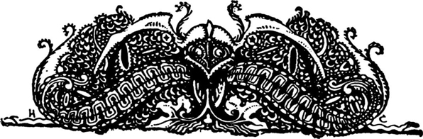
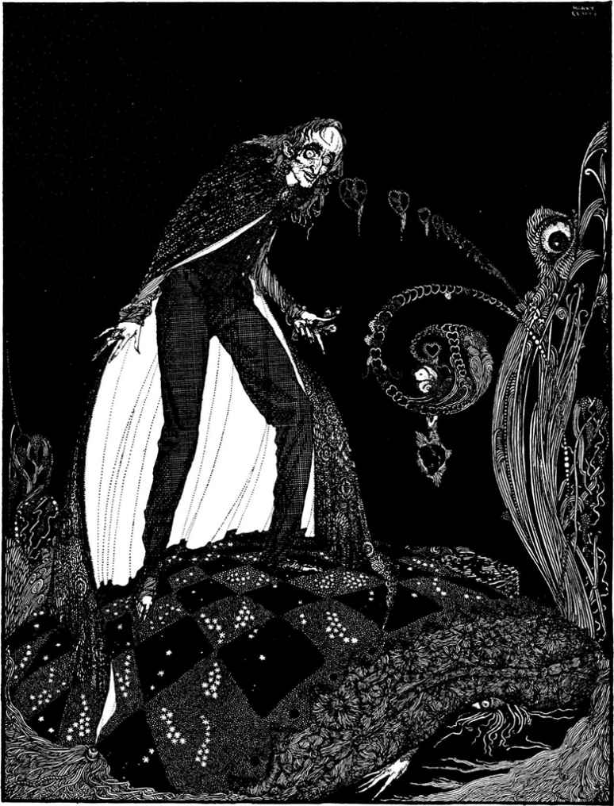
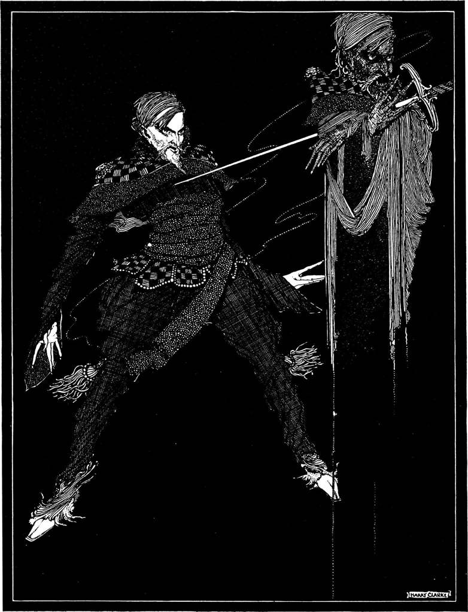
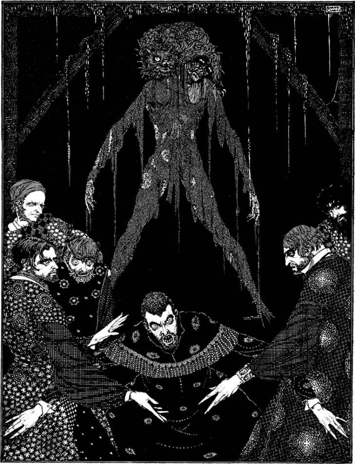
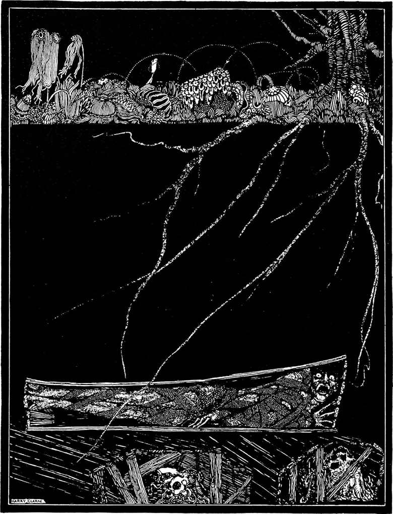
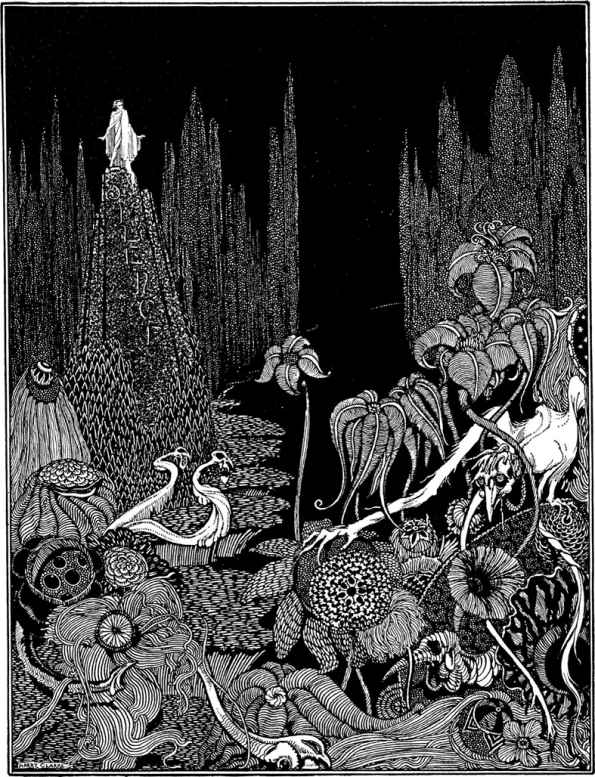

心理

“他(爱伦·坡)是美国有史以来最具有原创性的作家。他喜欢描写荒凉的虚幻的世界，喜欢窥探人类灵魂的最隐秘之处。”
——乔治·利帕德
泄密的心
没错!神经过敏，非常过敏，我从来就而且现在也非常厉害地神经过敏。可你干吗要说我是发疯？这种病曾一直使我的感觉敏锐，而没使它们失灵，没使它们迟钝。尤其是我的听觉曾格外敏感。我曾听见天堂和人世的万事万物。我曾听见地狱里的许多事情。那么，我现在怎么会疯呢？听好!并注意我能多么神志健全，多么沉着镇静地给你讲这个完整的故事。
现在已没法说清当初那个念头是怎样钻进我脑子的，但它一旦钻入，就日日夜夜纠缠着我。没有任何动机。没有任何欲望。我爱那个老人。他从不曾伤害过我。他从不曾侮辱过我。我也从不曾希图过他的钱财。我想是因为他的眼睛!对，正是如此!他有只眼睛就像是兀鹰的眼睛，淡淡的蓝色，蒙着一层阴翳。每当那只眼睛落在我身上，我浑身的血液都会变冷。于是渐渐地，慢慢地，我终于拿定了主意要结果那老人的生命，从而永远摆脱他那只眼睛。
那么这就是关键。你以为我疯了。疯了可啥也不知道。可你当初真该看看我。你真该看看我动手是多么精明，看看我是以何等的小心谨慎、何等的远见卓识、何等的故作镇静去做那件事情!在杀死那个老人之前的一个星期里，我对他从来没有过那么亲切。每天晚上半夜时分，我转动他的门闩并推开他的房门。哦，推得多轻!然后，当我把门推开到足以探进我的头时，我先伸进一盏遮得严严实实、透不出一丝光线的提灯，接着再探进我的脑袋。哦，你要是看见我是如何机灵地探进脑袋一定会发笑!我一点一点地探，非常非常地慢，以免惊扰了老人的睡眠。我花了一个小时才把头探进门缝，这时方能看见他躺在床上。哈!难道一个疯子有这般精明？然后，当我的脑袋已探进房间，我便小心翼翼地打开提灯。哦，非常小心，非常小心(因为灯罩轴吱嘎作响)。我只把提灯隙开一条缝，让一束细细的灯光照亮那只鹰眼。这样我一连干了七夜，每次都恰好在午夜时分。可是我发现那只眼睛总是闭着，这样就使得我没法下手，因为让我恼火的不是老人，而是他那只“邪恶的眼睛”。而每天早晨天一亮，我便勇敢地走进他的卧室，大胆地跟他说话，亲热地对他直呼其名，并询问他夜里睡得可否安稳。所以你瞧，要怀疑我每天半夜12点整趁他睡觉时偷偷去看望他，那他可真得是个深谋远虑的老人。
第八天晚上，我比往日更加小心地推开房门。就连表上分针的移动也比我开门的速度更快。那天晚上我第一次感觉到了自己的力量和机敏的程度。我几乎按捺不住心中那股得意劲儿。你想我就在那儿，一点一点地开门，而他甚至连做梦也想不到我神秘的举动和暗藏的企图。想到这儿我忍不住抿嘴一笑，而他也许听见了我的声音，因为他突然动了动身子，仿佛是受到了惊吓。这下你或许会认为我缩了回去，可我没有。他的房间里黑咕隆咚伸手不见五指(因为害怕盗贼，百叶窗被关得严严实实)，所以我知道他不可能看见门被推开。我依然继续一点一点地推开房门。
我探进了脑袋，正要打开提灯，这时我的拇指在铁皮罩扣上滑了一下，老人霍然从床上坐起，大声问道：“谁在那儿？”
我顿时一动不动，一声不吭。整整一个小时我连眼皮都没眨动。与此同时，我也没听见他重新躺下。他一直静静地坐在床上，侧耳聆听，就跟我每天夜里倾听墙缝里报死虫的声音一样。
随后我听见了一声轻轻的呻吟，而我知道那是极度恐惧时的呻吟。这样的呻吟不是因为痛苦或悲伤。哦，不是!它是当灵魂被恐惧彻底压倒时从心底发出的一种低沉压抑的声音。我熟悉这种声音。多少个夜晚，当更深人静，当整个世界悄然无声，它总是从我自己的心底涌起，以它可怕的回响加深那使我发狂的恐惧。我说我熟悉那种声音。我知道那位老人感觉到了什么，虽说我心里暗自发笑，可我还是觉得他可怜。我知道自从第一声轻微的响动惊得他在床上翻身之后，他就一直睁着眼躺在床上。从那时起他的恐惧感就在一点一点地增加。他一直在试图使自己相信没有理由感到恐惧，可他未能做到。他一直在对自己说：“那不过是风穿过烟囱，那仅仅是一只老鼠跑过地板，”或者“那只是一只蟋蟀叫了一声。”是的，他一直在试图用这些假设来宽慰自己，但他终于发现那是枉费心机。一切都枉费心机，因为走向他的死神已到了他跟前，幽暗的死荫已把他笼罩。而正是那未被察觉但却令人凄惶的死荫使他感觉到(尽管他既没有看见也没有听到)我的脑袋探进了他的房间。
我耐心地等了很长一段时间，没有听见他重新躺下。于是我决定把灯罩虚开一条缝，一条很小很小的缝。于是我开始动手。你简直想象不出我动手有多轻多轻。直到最后，一线细如游丝的微光终于从灯罩缝中射在了那只鹰眼上。
那只眼睛睁着，圆圆地睁着，而我一看见它就怒不可遏。我当时把它看得清清楚楚，一团浑浊的蓝色，蒙着一层可怕的阴翳，它使我每根骨头的骨髓都凉透；但我看不见脸上的其余部分和老人的躯体，因为仿佛是出于本能，我将那道光线丝毫不差地对准了那个该死的蓝点。
瞧，我难道没告诉过你，你所误认为的疯狂只不过是感觉的过分敏锐？那么现在我告诉你，当时我的耳朵里传进了一种微弱的、沉闷的、节奏很快的声音，就像是一只被棉花包着的表发出的声音。我也熟悉那种声音。那是老人的心在跳动。它使我更加狂怒，就像是咚咚的战鼓声激发出了士兵的勇气。
但我仍然控制住自己，仍然保持一声不吭。我几乎没有呼吸。我举着灯一动不动。我尽可能让那束灯光稳定地照在那只眼上。与此同时那可怕的心跳不断加剧。随着分分秒秒的推移，那颗心跳得越来越快，越来越响。那老人心中的恐惧肯定已到了极点!我说随着时间的推移，那心跳的声音变得越来越响!你明白我的意思吗？我已经告诉过你我神经过敏，我的确神经过敏。而当时是在夜深人静的时刻，在那幢老房子可怕的沉寂之中，那么奇怪的一种声音自然使我感到难以抑制的恐惧。但在相当长一段时间里，我仍然抑制住恐惧静静地站着。可那心跳声越来越响!我想那颗心肯定会炸裂。而这时我又感到一种新的担忧，这声音恐怕会被邻居听见!那老人的死期终于到了!随着一声呐喊，我亮开提灯并冲进了房间。他尖叫了一声，只叫了一声。转眼之间我已把他拖到床下，并且把那沉重的床倒过来压在他身上。眼见大功告成，我不禁喜笑颜开。但在好几分钟内，那颗心仍发出低沉的跳动声。不过它并没使我感到恼火，那声音不会被墙外边听到。最后它终于不响了。那个老人死了。我把床搬开，检查了一下尸体。不错，他死了，的确死了。我把手放在他心口试探了一阵。没有心跳。他完全死了。他那只眼睛再也不会折磨我了。

如果你现在还认为我发疯，那待我讲完我是如何精明地藏尸灭迹之后你就不会那么认为了。当时夜色将尽，而我干得飞快但悄然无声。首先我是把尸体肢解。我砍下了他的脑袋、胳膊和腿。
接着我撬开卧室地板上的三块木板，把肢解开的尸体全塞进木缝之间。然后我是那么精明又那么老练地把木板重新铺好，以至于任何人的眼睛(包括他那只眼睛)都看不出丝毫破绽。房间也用不着打扫洗刷，因为没有任何污点，没有任何血迹。对这一点我考虑得非常周到。一个澡盆就盛了一切。哈!哈!
当我弄完一切，已是凌晨4点。天仍然和半夜时一样黑。随着4点的钟声敲响，临街大门传来了敲门声。我下楼去开门时心情非常轻松，因为还有什么好怕的呢？三位先生进到屋里，彬彬有礼地介绍说他们是警官。有位邻居在夜里听到了一声尖叫，怀疑发生了什么恶事凶行，于是便报告了警察局，而他们(三名警官)则奉命前来搜查那幢房子。
我满脸微笑，因为我有什么好怕的呢？我向几位先生表示欢迎。我说那声尖叫是我在梦中发出。我告诉他们那位老人到乡下去了。我领着他们在房子里走了个遍。我请他们搜查，仔细搜查。最后我带他们进了老人的卧室。我让他们看老人收藏得好好的金钱珠宝。出于我的自信所引起的热心，我往卧室里搬进了几把椅子，并请他们在那儿休息休息，消除疲劳。而出于我的得意所引起的大胆，我把自己的椅子就安在了下面藏着尸体的那个位置。
警官们相信了我的话，我的举止使他们完全放心，我当时也格外舒坦。他们坐了下来，而当我畅畅快快回答问题时，他们同我聊起了家常。但没过一会儿，我觉得自己脸色发白，心里巴不得他们快走。我开始头痛，并感到耳鸣，可他们仍然坐着与我闲聊。耳鸣声变得更加明显，连绵不断而且越来越清晰。我开始侃侃而谈，想以此来摆脱那种感觉，但它连绵不断而且越来越明确，直到最后我终于发现那声音并不是我的耳鸣。
这时我的脸色无疑是变得更白，但我更是提高嗓门海阔天空。然而那声音也在提高。我该怎么办？那是一种微弱的、沉闷的、节奏很快的声音，就像是一只被棉花包着的表发出的声音。我已透不过气，可警官们还没有听见那个声音。我以更快的语速更多的激情夸夸其谈，但那个声音越来越响。我用极高的声调并挥着猛烈的手势对一些鸡毛蒜皮的小事高谈阔论，但那个声音越来越响。他们干吗还不想走？我踏着沉重的脚步在地板上走来走去，好像是那些人的见解惹我动怒，但那个声音仍然越来越响。哦，天啦!我该怎么办？我唾沫四溅，我胡言乱语，我破口大骂!我拼命摇晃我坐的那把椅子，让它在地板上磨得吱嘎作响，但那个声音压倒一切，连绵不断，越来越响。它越来越响，越来越响，越来越响!可那几个人仍高高兴兴，有说有笑。难道他们真的没听见？万能的主啊？不，不!他们听见了!他们怀疑了!他们知道了!他们是在笑话我胆战心惊!我当时这么想，现在也这么看。可无论什么都比这种痛苦好受!无论什么都比这种嘲笑好受!我再也不能忍受他们虚伪的微笑!我觉得我必须尖叫，不然就死去!可听!它又响了!听啊!它越来越响!越来越响!越来越响!
“你们这群恶棍!”我尖声嚷道，“别再装聋作哑!我承认那事!撬开这些地板!这儿，就在这儿!这是他可怕的心在跳动!”
威廉·威尔逊
怎么说它呢？怎么说倔强的良心、
我人生路上的那个幽灵呢？
——张伯伦《法萝妮达》
暂且就让我把自己叫作威廉·威尔逊吧。摊在我面前的这张白纸没必要被我的真名实姓所玷污。那姓名早已使我的家族受尽了羞辱，遭够了白眼，讨足了嫌弃。难道那义愤填膺的风还没有把这昭著的臭名扬到天涯海角？哦，天下最寡廉鲜耻的浪荡子哟!难道你对世事并非永远漠然？对世间的荣誉、鲜花和远大抱负并非永无感觉？难道在你的希望与天国之间并非永远垂着一片浓密、阴沉、无边无际的云？
要是可能的话，我今天就不会在此记录下我近年所遭受的难以形容的痛苦和犯下的不可饶恕的罪恶。这一时期(最近这些年)我突然越发地放荡堕落，这放荡堕落的原因正是我眼下要谈的话题。人们通常是一步步走向邪恶。可所有的道德于我就像一件披风，刹那间就从我身上全部脱掉。我仿佛是迈着巨人的步伐，一下子就从寻常的缺点陷到了比埃拉伽巴卢斯[30]的罪行更难饶恕的滔天大罪里。是什么命运，是什么样一种变故使这种罪行发生，现在就容我从头道来。死神正向我走近，预告他来临的阴影已经软化了我的心。在穿过这朦胧的死亡幽谷之时，我渴望得到世人的同情，我差点说得到世人的怜悯。我唯愿他们能相信，我多少是身不由己地受了环境的摆布。我企盼他们能从我正要讲述的详情里，替我在罪恶的荒漠中找到那片小小的命运的绿洲。我祈望使他们承认，承认他们所忍不住要承认的事实，尽管不久前诱惑也许真的大量存在，但至少绝没有人受到过我这样的诱惑，当然也绝没有人像我这样堕落。可难道因此就绝没有人像我这样痛苦过？难道我实际上不一直生活在一个梦中？难道我此刻不是作为那恐怖而神秘的最疯狂的人间幻影的牺牲品在等待死神？
我生于一个历来就以其想象力丰富和性情暴躁而著称的家族。我还在襁褓中就已经显示出我完全继承了家族的禀性。随着我一年年长大，这种禀性也更加难移；由于种种原因，这种禀性成了我朋友们焦虑不安的缘由，也成了我自己名誉受损的祸根。我渐渐变得刚愎自用，喜怒无常，放荡不羁。和我一样意志薄弱且体质羸弱的父母对我日益显露的恶性基本上是无可奈何。他们那番力不从心且不得要领的努力结果以他们的一败涂地而告终，当然也就是以我的大获全胜而告终。从此以后我的话便成了家里的法规。到了大多数孩子还在蹒跚学步的年龄，他们就任凭我按自己的意愿行事，除了名字，我自己的所有事都由我自己做主。
每每忆及我最初的校园生活，我总会想到一座巨大而不规则的伊丽莎白时代的房子，想到一个薄雾朦朦的英格兰村镇，想到镇上那许许多多盘根错节的大树和所有那些年代久远的房舍。实际上，那历史悠久的古镇真是个梦一般的抚慰心灵的地方。此刻我仿佛又感到了它绿荫大道上那股令人神清气爽的寒意，仿佛又闻到了它茂密的灌木丛所散发的那阵芳香，仿佛又怀着朦胧的喜悦被它那深沉而空灵的教堂钟声所感动，那钟声每隔一小时便突然幽幽鸣响，划破阴暗岑寂的空气，而那座有回纹装饰的哥特式尖塔就静静地嵌在那空气之中。
也许在我眼下的各种体验之中，唯有细细地回想那所学校和有关那所学校的往事才能够给我带来快活。虽然我现在正深深陷入痛苦(痛苦，唉!实实在在的痛苦)，但读者将会原谅我在东拉西扯的闲聊中去寻求痛苦的减轻，不管这种减轻是多么细微和短暂。再说照我看来，这些东鳞西爪甚至荒唐可笑的闲聊若是与某个时间和地点相连，倒会显出意想不到的重要性，因为就是在那个时间和那个地点，我第一次模模糊糊地听到了那个后来一直完全把我笼罩的命运对我提出的忠告。那就让我来回忆一下吧。
我已经说过那幢房子非常古老而且极不规则。房子周围的场地很宽，由一道顶上抹了泥灰并插着碎玻璃的又高又结实的砖墙围着。那道狱墙般的高壁就成了我们领土的疆界，墙外的世界我们一星期只有两天能看见，每个星期六下午我们被允许由两名老师领着，集体到附近的田野进行一次短时间的散步；每个星期日早晚各一次，我们排着同样的队列到镇上唯一的那座教堂做礼拜。我们的校长就是那座教堂的牧师。每次我从教堂后排的长凳上望着他迈着庄严而缓慢的步子登上布道坛时，我心里说不出有多么惊讶和困惑!那牧师的表情是多么庄重而慈祥，那身长袍是多么似是而非又似非而是，那头假发是多么硬，多么密，发粉敷得多么匀!这难道会是他，会是那个昨天还板着副面孔、穿着被鼻烟弄脏的衣服、手握戒尺在学校执行清规戒律的人？呵，真是格格不入，荒谬绝伦，令人难以理解!
那堵阴沉的高墙一角开着一道更阴沉的大门。门扇上星罗棋布地饰满了螺钉，门顶上参差不齐地竖立着尖铁。那道门是多么地令人生畏!除了上述3次定日定时的出入，那道门平时从不打开；所以每当它巨大的铰链发出吱嘎声响，我们就会发现许许多多的奥秘，许多值得认真观察、也更值得严肃思索的事物。
宽阔的校园形状极不规则，有许多大片大片的幽僻之处，其中最大的三四片就构成了学校的运动场。运动场地面平坦，铺着又细又硬的沙砾。我清楚地记得运动场内没有树木，没有长凳，也没有任何类似之物。当然，运动场是在那幢房子的后面。房子的正前方有一个小小的花坛，种着黄杨之类的灌木，但实际上，除了在第一次进校和最后毕业离校的时候，或是父母亲友来接我们、我们高高兴兴回家过圣诞节或是施洗约翰节的时候，我们很少经过那块圣地。
但那幢房子!那是座多么古怪的老式建筑!它在我眼里真是一座名符其实的迷宫!它那些迂回曲折的走廊仿佛没有尽头。它那种莫名其妙的分隔常令人找不到出路。任何人在任何时候都很难说清自己到底是在它两层楼的楼上还是楼下。从任何一个房间到任何另一个房间都肯定会碰到三四级或上或下的台阶。还有它那些多得令人难以想象的偏门旁屋，那真是门门相通，屋屋相连，以至于我们对那幢房子最精确的概念跟我们思考无穷大时所用的概念相去不远。在我寄读那所学校的5年期间，我从来就未能够弄清楚分给我和另外十八九名同学住的那间小寝室到底在那幢房子的哪一个偏僻角落。
我们的教室是那幢房子里最大的一间，我当时忍不住认为那是天下最大的一间。房间很长，狭窄，低得令人压抑，有哥特式的尖窗和橡木天花板。教室远端令人生畏的一角有个八九英尺见方的凹室，那是我们校长、牧师布兰斯比博士“定时祈祷”时的圣所。那凹室构造坚固，房门结实，当那位“老师兼牧师”不在的时候，我们大家宁愿死于酷刑也不肯去开那门。教室的另外两个角落还有两个类似的隔间，虽说远不及那个凹室令人生畏，但仍然令人肃然起敬。一个是“古典语文”老师的讲坛，另一个是“英语和数学”教师的讲坛。教室里横三竖四歪七扭八地摆着许多陈旧的黑色长凳和课桌，桌上一塌糊涂地堆着被手指翻脏的课本，桌子表面凡是刀子下得去的地方都被刻上了缩写字母、全名全姓和各种稀奇古怪的花样图案，以至于那些桌子早已经面目全非。教室的一头放着一只盛满水的大桶，另一头搁着一只大得惊人的钟。
就在那所古老学校厚实的围墙之内，我度过了我生命的第3个5年，既没有感到过沉闷，也不觉得讨厌。童年时代丰富的头脑不需要身外之事来填充或娱乐，学校生活明显的单调沉闷之中却充满了我青年时代从奢侈之中、成年时代从罪恶之中都不曾再感到过的那种强烈的激动。但我必须认为，在我最初的智力发育中有许多异乎寻常甚至过分极端之处。对一般人来说，幼年时代的经历到成年后很难还有什么鲜明的印象。一切都成了灰蒙蒙的影子，成了一种依稀缥缈的记忆，一种朦胧的喜悦和虚幻的痛苦之模糊不清的重新糅合。但我却不是这样。想必我在童年时就是以成年人的精神在感受那些今天仍留在我脑子里的记忆，那些像迦太基徽章上镌刻的题铭一样鲜明、深刻、经久不灭的记忆。
但事实上，依照世人的眼光来看，那儿值得记忆的事情是多么的少啊!清晨的梦中惊醒、夜晚的就寝传唤、每天的默读背诵、定期的礼拜和散步；此外就是那个运动场和运动场上的喧闹、嬉戏和阴谋诡计。可这一切在当时，由于一种现在早已被遗忘的精神幻术，曾勾起过多少斑驳的情感，曾引起过多少有趣的故事，曾唤起过多少令人精神振奋的激动!“啊，那个铁器时代是多么欢乐的时代!”[31]说实话，我与生俱来的热情和专横很快就使我在校园里成了个著名人物，而且慢慢地但却越来越巩固地，我在所有那些比我大不了多少的同学中间占据了支配地位，除了一个例外，其他所有人都听我摆布。那个例外虽然并不与我沾亲带故，但却和我同名同姓。这一巧合其实也不足为奇，因为我虽然出身高贵，但我的姓名却非常普通，依照约定俗成的时效权利，这姓名自古以来就被平民百姓广泛采用。因此在这篇叙述中我把自己叫作威廉·威尔逊，一个与我的真名实姓相差无几的虚构的名字。在按校园术语称之为的“我们这伙人”当中，唯有我那位同名者敢在课堂上的学习中与我竞争，敢在运动场的戏闹中与我较量，敢拒绝盲目相信我的主张，不肯绝对服从我的意志。实际上，他敢在任何方面对我的独断专行都横加干涉。如果人世间真有至高无上的专制，那就是孩子群中的大智者对其智力略逊一筹的伙伴们的专制。
威尔逊之不逊成了我窘迫不安的原因。最令我难堪的是，尽管在公开场合我坚持对他和他的自负进行虚张声势的威胁，但私下里我却意识到自己怕他，并且不得不承认，他那么轻而易举就和我并驾齐驱恰好证明了他之优秀；因为为了不被他压倒，我已经进行过不懈的努力。不过他的优秀(甚至他的与我并驾齐驱)其实也只被我一个人所承认；由于某种无法解释的视而不见，我们那些同学似乎没有半点察觉。实际上，他与我的竞争，他同我的较量，尤其是他对我意志的横加干涉，从来都不曾公开，而是在私下里进行。他好像既没有需要我去征服的野心，也没有能促使我去超过的激情。说不定他和我作对的唯一动机就是使我受挫，令我吃惊，让我丢脸；尽管有时我禁不住怀着一种又惊又恼的窘迫心情发现，他对我的伤害、羞辱或反驳之中竟包含着一种极不相称且讨厌之至的深情厚意。我只能认为这种异常的表现是由于他极度的自负，由于他俗不可耐地以庇护人和保护者自居。
也许正是威尔逊行为中的后一个特征，加之我们同名同姓而且碰巧同一天入校，这才使得学校高年级同学中流传开了我俩是兄弟的说法。那些高年级学生对低年级同学的事往往不进行非常认真的查问。我前面已说过或早就说过，那个威尔逊与我们家丝毫也不相干。但假若我俩真是兄弟，那肯定应该是孪生兄弟；因为后来我离开布兰斯比博士的那所学校之后，曾偶然听说我那位同名者生于1813年1月19日。这真算得上是个惊人的巧合，因为那天恰好是我的生日。
看起来也许有点奇怪，虽然威尔逊的作对以及他那令人难以容忍的抵触情绪不断给我带来忧虑，但我对他却一点儿也恨不起来。诚然我俩几乎每天都争吵，诚然他当众让与我胜利的棕榈而事后又千方百计让我感到胜利本该归他；但我所具有的一种自尊心和他所具有的一种名副其实的尊严使我俩之间总保持着那种所谓的“泛泛之交”，而我俩性格和情趣上的许多相同之处则在我心中唤起了一种感情，也许仅仅是我俩各自所处的位置阻止了这种感情化为友谊。实际上很难解释，甚至很难形容我对他的真实感情。那是一种错综复杂的混合感情，一种说不上仇恨的意气用事的怨恨，三分尊重、五分敬仰、七分畏惧，其中又糅合进许许多多令人不安的好奇。另外对道德学家我得加上一句，大可不必说威尔逊和我是最难分开的朋友。
毫无疑问，正是因为这种存在于我俩之间的微妙关系，我对他的攻击(许许多多公开或隐蔽的攻击)成了一种善意的取笑或恶作剧(用逗乐的方式使他苦恼)，而没有成为真正的敌对行为。不过我的这一手并非每次都成功，甚至连我最周密的计划也有失败的时候；因为我那个同名者具有与其个性相称的稳重和严谨，而当他自己开始冷嘲热讽之时，那真是滴水不漏，无懈可击，绝不会露出破绽让对手反唇相讥。实际上我只能找到他一个弱点，而对这个可能是因为先天疾病而造成的生理缺陷，不到我那种智穷才竭的地步谁也不忍心去加以利用。我对手的弱点就在于他的咽喉或者说发音器官，这使得他的嗓音在任何时候都只能提到悄声细语的高度。对他这个可怜的缺点，我从来就没放过加以利用的机会。
威尔逊的报复可谓多种多样，而其中有一种曾搅得我不知所措。他那聪明的头脑当初是如何发现那漂亮的一手的，这问题过去常常使我烦恼，而且我迄今也未能找到答案；可他一经发现那一手，就常常用它来烦我。我过去一直讨厌我这个没有气派的姓名，它实在太普通，即使不说它贱。我一听到那几个字眼就仿佛听见恶毒的话语；而当我入学那天得知又有一个威廉·威尔逊到校，我不禁因他与我同名而怒火中烧，并且对那个名字更加倍讨厌，因为一个陌生人也叫那名字，那名字的呼喊频率就会增加一倍，而那个陌生人会经常出现在我眼前，由于这讨厌之至的巧合，他在学校日常活动中的所作所为将不可避免地常常与我的行为混淆。
就这样，随着我与对手在心理或生理两方面的相似之处一个接一个地被证实，我的烦躁不安也变得越来越强烈。我当时尚未发现我俩同岁这一惊人的事实，但我已看出他个子同我一般高，并意识到我们连身材相貌都出奇地相似。高年级同学中关于我俩是亲戚的谣传也令我气愤。总而言之，除了提到我俩之间性情、相貌或身份的相似，还没有什么事能使我如此不安(尽管我总是小心翼翼地掩饰这种不安)。但除了我与他的关系之外，事实上我毫无理由认为我与他的相似已成了别人议论的话题，甚至没理由认为同学们对此已有所察觉。他已从各方面有所察觉，并且和我一样确定，这倒是显而易见的事实；但正如我前面所说，他之所以能从那么多方面发现这一令人烦恼的方面，这只能归因于他非同寻常的观察能力。
他竭力完善对我言谈举止的模仿，并且把他的角色扮得令人叹服。我的衣着服饰很容易就被他如法炮制。我的步态举止他没费功夫就据为己有。甚至连我的声音，尽管他有那个天生的缺陷，也没有逃脱被他盗用。我洪亮的声音他当然望尘莫及，可我的语调竟被他模仿得惟妙惟肖，而他那种独特的悄声细语慢慢也就成了我语调的回声。
那幅最精美的肖像(因为公正地说那不能被称为漫画)当时使我有多么烦恼，此刻我不敢冒昧地加以描述。那时我唯一的安慰就在于这样一个事实：显然只有我一个人注意到了那种模仿，而我不得不忍受的也只有我那位同名者狡黠而奇怪的冷笑。他似乎满足于在我心中造成了预期效果，只为已经刺痛了我而暗暗得意，而全然不在乎他心智的成功很可能为他赢得的公众的喝彩。事实上在其后提心吊胆的几个月中，全校竟无一人察觉他的计划，无人发现他的成功并和他一齐嘲笑，这一事实对我来说一直是个不解之谜。也许是他模仿的浓淡相宜使其不那么容易被人识破，或更有可能的是，我之所以平安无事是因为那个模仿者巧妙娴熟的风格，他不屑于模仿形式(在一幅画中迟钝的人看到的只是形式)，而是以我特有的沉思和懊恼来展示原作的全部精神实质。
我已经不止一次地谈到了他那副以我的庇护人自居的讨厌面孔，谈到了他常常多管闲事地对我的意志横加干涉。那种干涉往往具有令人讨厌的劝喻性。他不是直截了当地提出忠告，而是含沙射影地给予暗示。我怀着一种矛盾的心理接受他的劝告，但随着年岁增长，那种矛盾也越发尖锐，但在事隔多年后的今天，就让我公平地对待他一次。我承认，尽管他当时看上去年幼无知且经验不足，但我不记得他所给予的暗示中有过任何他那种年龄容易有的谬误或愚蠢；我承认即便他综合能力不比我强，世故人情不比我精，但至少他的道德意识远远比我敏锐；而且我还要承认，假若当初我对那些包含在那个意味深长的悄声细语里的忠告不是那么深恶痛绝，不是那么嗤之以鼻，不是那么常常抵制的话，那说不定我今天就会是一个更善良的人，因而也是一个更幸福的人。
可事实上我终于对他那种令人厌恶的监督厌恶到了极点，而且一天比一天公开地对他那种我认为难以容忍的傲慢表示出怨恨。我说过，在我俩同学的前几年中，我对他的感情说不定很容易转化成友谊；但在我寄居学校的最后几个月里，虽说他以往那种对我的横加干涉已经无疑地有所减少，可我的感情却几乎与之成反比，明确无误地具有了几分敌意。我想他有一次看出了这点，从此对我就避而远之，或是表面上对我避而远之。
如果我没记错，我大约就在那段时间里跟他有过一次激烈的争吵，在争吵中他一反常态地毫无戒心，说话举止都表现出一种与他性格极不相符的直露坦率；当时我从他的音调、神态和外表之中发现了(或者说我以为发现了)一种开始令我不胜惊讶、接着又使我极感兴趣的东西，它使我脑子里浮现出我襁褓时代的朦胧幻象，许许多多在记忆力出现之前就存在的纷乱庞杂的印象。我与其去描述那种使我压抑的感觉，倒不如说我费了一番劲才使我不再认为我与站在我眼前那人相识在某个非常遥远的时期，某个甚至无法追溯的悠远的年代。不过那种幻觉倒也与它来得突然一样很快就消逝了。我在此提到它仅仅是为了明确我与我那位奇特的同名者在那所学校最后一次谈话的日期。
那幢有无数房间的巨大而古老的房子有几个彼此相连的大房间，那儿住着全校绝大部分学生。然而(像设计得那么笨拙的建筑所不可避免的一样)那幢房子里有许多角落、壁凹和其他零星的剩余空间，具有经济头脑的布兰斯比博士把它们也都改装成了寝室，尽管这些寝室只有壁橱那么大，里边只能容一个人居住。在这样一间小寝室中就住着威尔逊。
在我5年学校生活快结束之时，也就是在刚才提到的那场争吵之后的一天晚上，趁同学们蒙头酣睡之机，我悄悄翻身下床，提着灯偷偷穿过一条条狭窄的通道，从我的房间去我那位对手的寝室。我早就心怀恶意地想出了一招要拿他寻开心的恶作剧，可一直没找到适当的机会下手，现在我就要去把我的计划付诸实现，我决意要让他感到我心中对他的怨恨到底有多深。来到他那间小寝室门前，我把手中有灯罩的灯放在门外，无声无息地溜了进去。我往前迈了一步，听到了他平静的呼吸声。确信他已睡着，我转身取了灯，再一次走到那张床前。在实行我计划的过程中，我轻轻地慢慢撩开了遮住卧床的帘子，当明亮的灯光照在那熟睡者身上，我的目光也落在了他的脸上。我定睛一看，顿时只觉得四肢麻木，浑身冰凉，心跳加剧，两腿发颤，一种莫可名状、难以忍受的恐惧攫住了我的整个心灵。我喘着气把灯垂低，尽量凑近那张脸。难道这，这就是威廉·威尔逊那副容貌？我看见的的确是他的容貌，但想象中他并非这个样子，这使我像发疟疾似的一阵颤抖。那副容貌上有什么使我如此惊慌失措？我两眼凝视着他，脑子里却闪过许多不连贯的念头。他清醒而活泼的时候看起来不像这样，肯定不像这样。同一个名字!同一副面孔!同一天进入同一所学校!接下来就是他锲而不舍并毫无意义的模仿，模仿我的步态、嗓音、习惯和举止!可难道人间真有这种可能，难道我此刻所目睹的仅仅是那种可笑的模仿之习以为常的结果？我不寒而栗，毛骨悚然，灭灯悄悄地退出那房间，并立即离开了那所古老的学校，从此再也没返回那里。
无所事事地在家里过了几个月之后，我成了伊顿公学的一名学生。对于在布兰斯比博士那所学校里发生的事，那短短的几个月已足以淡化我的记忆，或至少使我回忆时的心情发生了实质性的变化。那出戏的真相(悲剧情节)已不复存在。我这下能有时间来怀疑当时我的意识是否清楚，而且每每忆及那事我都忍不住惊叹世人是多么容易轻信，并暗暗讥笑我天生具有的想象力竟如此活跃。这种怀疑也不可能被我在伊顿公学所过的那种生活抹掉。我一到伊顿就那么迫不及待，那么不顾一切地投入的轻率而放荡的生活，就像旋涡一样卷走了一切，只剩下过去生活的沉渣，所有具体的或重要的印象很快就被淹没，脑子里只剩下对往日生活的最轻淡的记忆。
但是我此刻并不想回顾我无耻放荡的历程，一种巧妙地躲过了校方监督的藐视法律的放荡。3年的放荡形骸使我一无所获，只是根深蒂固地染上了各种恶习，此外就是身材有点异乎寻常地长高。一次在散漫浪荡了一星期之后，我又邀了一伙最不拘形迹的同学到我的房间偷偷举行酒宴。我们很晚才相聚，因为我们打算痛快地玩个通宵。夜宴上有的是酒，也不乏别的刺激，也许还有更危险的诱惑；所以当东方已经显露出黎明的曙光，我们的纵酒狂欢才正值高潮。玩牌醉酒早已使我满脸通红，当我正用亵渎的语言坚持要与人干一杯时，我突然注意到房门被人猛地推开了一半，接着从门外传来一个仆人急切的声音。他说有人正在门厅等着要同我谈话，而且显然迫不及待。
当时酒已使我异常兴奋，那冷不防的打扰非但没让我吃惊，反而令我感到高兴。我歪歪斜斜地出了房间，没走几步就到了那座建筑的门厅。又矮又小的门厅里没有点灯，而除了从半圆形窗户透进的朦胧曙光，没有任何灯光能照到那里。当我走到门边时，我看见一个年轻人的身影，他的个子与我不相上下，他身上那件式样新颖的白色克什米尔羊绒晨衣也同我当时穿的那件一样。微弱的曙光使我看到了这些，但却没容我看清他的脸。我一进屋他就大步跨到我跟前，十分性急地抓住我一条胳膊，凑到我耳边低声说出几个字眼“威廉·威尔逊”。
我一下子完全清醒过来。
陌生人那番举动的方式，他迎着曙光伸到我眼前的手指颤抖的那种方式，使我心中充满了极度的惊讶；但真正使我感到震动的还不是那种方式，而是那个独特、低沉而嘶哑的声音里所包含的告诫；尤其是他用悄声细语发出那几个简单而熟悉的音节时所有的特征、声调和语调，像一股电流使我的灵魂猛然一震，许许多多的往事随之涌上心头。不待我回过神来，他已悄然离去。
虽说这一事件并非没有对我纷乱的想象力造成强烈的影响，但那种强烈毕竟是短暂的。我的确花了几个星期来认真调查，或者说我被裹进了一片东猜西想的云中。我并不想假装没认出那个人，那个如此穷追不舍地来对我进行干涉、用他拐弯抹角的忠告来搅挠我的怪人。但这个威尔逊究竟是谁？他是干什么的？他从哪儿来？他打算做什么？对这一连串问题我都找不到答案，只查明他家突遭变故，使他在我逃离布兰斯比博士那所学校的当天下午也离开了那所学校。但很快我就不再去想那个问题，而一门心思只想着要去牛津大学。不久我果然到了那里。我父母毫无计划的虚荣心为我提供了全套必需品和固定的年金，这使我能随心所欲地沉迷于我已经那么习惯的花天酒地的生活，使我能同大不列颠那帮最趾高气扬的豪门子弟攀比阔气。
那笔供我寻欢作乐的本钱使我忘乎所以，我与生俱来的脾性更是变本加厉，在我疯狂的醉生梦死之中，我甚至不顾最起码的礼仪规范。但我没有理由停下来细述我的骄奢淫逸。我只需说在所有的浪荡子中，我比希律王还荒淫无耻，而若要为那些数不清的新奇的放荡行为命名，那在当时欧洲最荒淫的大学那串长长的恶行目录上，我加上的条目可真不算少。
然而几乎令人难以置信，正是在那所大学里，我堕落得完全失去了绅士风度，竟去钻研职业赌棍那套最令人作呕的技艺，而一旦精通了那种卑鄙的伎俩，我便常常在一些缺心眼儿的同学中玩弄，以此增加我本来已经够多的收入。不过事实就是如此。我那种有悖于所有男子汉精神和高尚情操的弥天大罪无疑证明了我犯罪时肆无忌惮的主要原因(假若不是唯一原因)。事实上在我那帮最放荡的同伙之中，有谁不宁愿说自己头昏眼花，也不肯怀疑威尔逊有那种品行，那个快活的、坦率的、慷慨的威廉·威尔逊，那个牛津大学最高贵、最大度的自费生。他的放荡(他的追随者说)不过是年轻人奇思异想的放纵，他的错误不过是无与伦比的任性，他最狠毒的恶行也只不过是一种轻率而冒昧的过火行为？我就那样一帆风顺地鬼混了两年，这时学校里来了一位叫格伦迪宁的青年，一个新生的贵族暴发户，据说他与希罗德·阿蒂库斯[32]一样富有，钱财也一样来得容易。我不久就发现他缺乏心计，当然就把他作为了我显示技艺的合适对象。我常常约他玩牌，并用赌棍的惯用伎俩设法让他赢了一笔可观的数目，欲擒故纵地诱他上我的圈套。最后当我的计划成熟之时，我(抱着与他决战的企图)约他到自费生普雷斯顿先生的房间聚会，普雷斯顿与我俩都是朋友，但公正地说他对我的阴谋毫无察觉。为了让那出骗局更加逼真，我还设法邀请了另外八九名同学，我早就精心策划好玩牌之事要显得是被偶然提到，而且要让我所期待的那个受骗上当者自己提出。我简单布置好这件邪恶勾当，该玩的花招伎俩无一遗漏，而那些如出一辙的花招伎俩是那么司空见惯，以至于唯一值得惊奇的就是为何还有人会稀里糊涂地上当。
我们的牌局一直延续到深夜，我终于达到了与格伦迪宁单独交手的目的。我们所玩的也是我拿手的二人对局。其他人对我俩下的大额赌注很感兴趣，纷纷抛下他们自己的牌围拢来观战。那位暴发户早在上半夜就中了我的圈套，被劝着哄着喝了不少的酒，现在他洗牌、发牌，或玩牌的动作中都透出一种极度紧张，而我认为他的紧张并不全是因为酒醉的缘故。转眼工夫他就欠下了我一大笔赌账，这时他喝了一大口红葡萄酒，然后完全按照我冷静的预料提出将我们本来已大得惊人的赌注再翻一番。我装出一副不情愿的样子，直到我的再三不肯惹得他出言不逊，我才以一种赌气的姿态依从了他的提议。这结果当然只能证明他已经完全掉进了我设下的陷阱。在其后不到一个小时的时间内，他的赌债又翻了4番。酒在他脸上泛起的红潮早就在慢慢消退，可现在看见他的脸白得吓人仍令我不胜惊讶。我说我不胜惊讶，因为我早就打听到格伦迪宁的钱财不可计量。我想他输掉的那笔钱对他虽然不能说是九牛一毛，但也不会使他伤筋动骨，不至于对他产生那么强烈的影响。他脸色白成那副模样，最合理的解释就是他已经不胜酒力。与其说是出于什么不那么纯洁的动机，不如说是想在朋友们眼里保住我的人格，我正要断然宣布结束那场赌博，这时我身边一些伙伴的表情和格伦迪宁一声绝望的长叹使我突然明白，我已经把他毁到了众人怜悯的地步，毁到了连魔鬼也不忍再伤害他的地步。
现在也很难说清我当时该怎么办。我那位受害者可怜巴巴的样子使在场的每一个人都露出尴尬而阴郁的神情。屋子里一时间鸦雀无声，寂静中那伙人中的尚可救药者朝我投来轻蔑或责备的目光，我禁不住感到脸上火辣辣的。我现在甚至可以承认，当随之而来的那场意外突然发生时，我焦虑不堪的心在那一瞬间竟感到如释重负。那个房间又宽又厚的双扇门突然被推得大开，开门的那股猛劲儿像变戏法似的，熄灭了房间里的每一支蜡烛。在烛光熄灭前的刹那间，我们刚好能看见一个陌生人进了房间，他个子和我不相上下，身上紧紧地裹着一件披风。可现在屋子里一团漆黑，我们只能感觉他正站在我们中间。大家还未能从那番鲁莽所造成的惊讶中回过神来，那位不速之客已开口说话。
“先生们，”他用一种低低的、清晰的、深入我的骨髓而令我终生难忘的悄声细语说，“先生们，我不为我的行为道歉，因为我这番冒昧是在履行一种义务。毫无疑问，你们对今晚在双人牌局中赢了格伦迪宁勋爵一大笔钱的这位先生的真正品格并不了解。因此我将向你们推荐一种简捷而实用的方法，以便你们了解到你们非常有必要了解的情况。你们有空时不妨搜搜他左袖口的衬里，从他绣花晨衣那几个大口袋里或许也能搜出几个小包。”
他说话时屋里非常安静，静得连掉根针在地上也许都能听见。他话音一落转身便走，去得和来时一样突然。我能够，或者说我需要描述我当时的感觉吗？我必须说我当时感到了所有要命的恐惧吗？无疑我当时并没有足够的时间做出反应。大伙儿七手八脚当场把我抓住，烛光也在突然之间重新闪亮。一场搜查开始了。他们从我左袖口的衬里搜出了玩双人对局必不可少的花牌，从晨衣口袋里找到了几副与牌局上用的一模一样的纸牌，只不过我这几副是那种术语称为的圆牌，大牌的两端微微凸出，小牌的两边稍稍鼓起。经过这样一处理，按习惯竖着切牌的上当者将发现他抽给对手的常常都是大牌，而横着切牌的赌棍则肯定不会抽给他的受害人任何一张可以计分的大牌。
他们揭穿我的骗局后若真是勃然大怒，也会比那种无言的蔑视或平静的讥讽令我好受。
“威尔逊先生，”我们的主人一边说一边弯腰拾起他脚下的一件用珍稀皮毛缝制的华贵的披风，“威尔逊先生，这是你的东西。”(那天天冷，我出门时便在晨衣外面披了件披风，来到赌牌的地方后又把它脱下放到一边。)“我想就不必再从这件披风里搜出你玩那套把戏的证据了(他说话时冷笑着看了看披风的褶纹。)实际上我们已有足够的证据。我希望你能明白，你必须离开牛津。无论如何得马上离开我的房间。”
虽说我当时自惭形秽，无地自容，但若不是我的注意力被一个惊人的事实所吸引，那我早就会对那种尖酸刻薄做出强烈的反应。我当时穿的那件披风是用一种极其珍稀的毛皮做成，至于有多珍稀、多贵重，我不会贸然说出。那披风的式样也是我独出心裁的设计，因为我对那种琐碎小事的挑剔已到了一种虚浮的地步。所以当普雷斯顿先生将他从双扇门旁边地板上拾起的那件披风递给我时，我惊得近乎于恐怖地发现我自己那件早已经搭在我胳膊上(当然是在无意识之间搭上的)，而递给我的那件不过是我手中这件的翻版，两件披风连最细小的特征也一模一样。我记起那位来揭我老底的灾星进屋时就裹着一件披风，而屋里其他人除我之外谁也没穿披风。我还保持着几分镇定，于是我从普雷斯顿手中接过那件披风，不露声色地把它重在我手中那一件之上，然后带着一种毅然决然的挑衅神情离开了那个房间。第二天早晨天还未亮，我便怀着一种恐惧与羞愧交织的极度痛苦的心情，匆匆踏上了从牛津到欧洲大陆的旅途。
我的逃亡终归徒然。我的厄运似乎乐于把我追逐，并实实在在地表明他对我神秘的摆布还刚刚开始。我在巴黎尚未站稳脚跟就发现那个可恶的威尔逊又在对我的事情感兴趣。岁月一年年流逝，而我却没感到过安定。那条恶棍!在罗马，他是多么不合时宜又多么爱管闲事地像幽灵一样插在我与我的雄心之间!在维也纳也如此。在柏林也这般。在莫斯科也同样没有例外!实际上在哪儿我会没有从心眼里诅咒他的辛酸的理由呢？我终于开始惊恐地逃避他那不可思议的暴虐，就像在逃避一场瘟疫；但我逃到天涯海角也终归徒然。
我一次次地在心里暗暗猜想，我一次次地对着灵魂发问：“他是谁？他从哪儿来？他到底要干什么？”但是我从来找不到答案。现在我又以十二万分的精细，彻底审视他对我进行无理监督的形式、方法和主要特征。可就是从这儿也很少能找到可进行推测的根据。实际上能引人注目的就是，在最近他对我挡道拆台的无数事例中，他没有一次不是要挫败和阻挠我那些一旦实现就会造成灾难性后果的计划和行动。其实，这一发现对一种显得那么专横的权力来说，不过是一种可怜的辩护!对一种被那么坚决而不客气地否认的自封的天赋权力来说，不过是一种可怜的补偿!
我还被迫注意到，长期以来，我那位施刑者虽然小心而奇妙地坚持穿和我一样的衣服，但他每次对我的意志横加干涉时都应付得那么巧妙，以至于我在任何时候都未能看清他那副面孔。不管他威尔逊会是什么样的人，他这样做至少是矫揉造作，或者愚不可及。难道他真以为我居然会认不出在伊顿公学警告我的、在牛津大学毁了我名誉的、在罗马阻挠我一展宏愿的、在巴黎遏止我报仇雪恨的、在那不勒斯妨碍我风流一番的，或在埃及不让我被他错误地称为贪婪的欲望得到满足的那个凶神和恶魔就是我中学时代的那个威廉·威尔逊，那个我在布兰斯比博士那所学校时的同名者、那个伙伴、那个对手、那个既可恨又可怕的对手？这不可能!但还是让我赶紧把这幕剧的压轴戏唱完吧。
我就那样苟且偷安地屈服于了那种专横的摆布。我注视威尔逊的高尚品格、大智大慧、无所不在和无所不能之时所惯有的敬畏心情，加上我注意他天然生就或装腔作势的其他特征之时所具有的恐惧心理，一直使我深深地意识到自己的软弱与无能，使我(尽管极不情愿)盲目地服从他独断专行的意志。但最近一些日子我饮酒无度，酒精对我天性的疯狂影响使我越来越不堪任人摆布。我开始抱怨，开始犹豫，开始反抗。难道我认为自己越来越坚定，而我那位施刑者却越来越动摇？这仅仅是我的一种幻觉？即便就算是幻觉，我现在已开始感觉到一种热望的鼓舞，最后终于在心灵深处形成了一个坚定不移且孤注一掷的决心，那就是我不再甘愿被奴役。
那是在罗马，18××年狂欢节期间，我参加了一个在那不勒斯公爵迪·布罗利奥宫中举行的化装舞会。我比平常更不节制地在酒桌边开怀畅饮了一通，这时那些拥挤不堪的房间里令人窒息的空气已使我恼怒。挤过那乱糟糟的人群之困难更使得我七窍生烟，因为我正在急切地寻找老朽昏聩的迪·布罗利奥那位年轻漂亮且水性杨花的妻子(请允许我不说出我那并不高尚的动机)。她早就心照不宣地告诉了我她在化装舞会上将穿什么样的服装，现在我瞥见了她的身影，正心急火燎地朝她挤去。就在此时，我感到一只手轻轻摁在我肩上，那个低低的、该死的、我永远也忘不了的悄声细语又响在我耳边。
在一阵绝对的狂怒之中，我猛转身朝着那位妨碍我的人，一把揪住他的衣领。果然不出我所料，他打扮得和我一模一样，身上披一件蓝色天鹅绒的西班牙披风，腰间系一条猩红色皮带，皮带上悬着一柄轻剑，一副黑丝绸面具蒙着他的脸。
“无赖!”我用沙哑的声音愤然骂道，我骂出的每一个字都像是往我心中那团怒火浇的一瓢油，“无赖!骗子!该死的恶棍!你不该，你不该对我穷追不舍!跟我来，不然我就让你死在你站的地方!”我拽着并不反抗的他挤过人群，从舞厅来到了隔壁的一间客厅。
我一进屋就猛然把他推开。他跌跌撞撞地退到墙边，这时我发着誓关好了房门，转身命令他拔出剑来。他略为踌躇了片刻，然后轻轻叹了口气，终于默默地抽剑摆出防御的架势。
那场决斗的确非常短暂。各种各样的刺激早已使我疯狂，我觉得自己握剑的手有千钧之力。眨眼工夫我就奋力把他逼到墙根，这下他终于得任我摆布，我凶狠而残暴地一剑剑刺透他的心窝。
这时有人试图扭开门闩。我急忙去阻止被人闯入，随之又转身朝着我那位奄奄一息的对手。可人世间有什么语言能描述我当时看见那番情景时的那种惊异，那种恐怖？就在我刚才掉头之间，那个小客厅的正面或说远端在布置上发生了一个重大的变化。一面大镜子(在我开初的慌乱之中显得如此)正竖立在刚才没有镜子的地方，而当我怀着极度恐惧的心情朝它走过去时，我的影子，我那面如死灰、浑身溅满鲜血的影子也步履踉跄地朝我走来。

我说显得如此，其实并非如此。走过来的是我那个对手，是威尔逊，他正带着临死的痛苦站在我面前。他的面具和披风已被扔在地板上。他衣服上没有一根纤维不是我衣服上的纤维。他那张脸上所有显著而奇妙的特征中没有一丝纹缕，甚至按照最绝对的同一性，不是我自己的!
那就是威尔逊，但他说话不再用悄声细语，当时我还以为是我自己在说话：
你已经获胜，而我输了。但从今以后你也就死去，对这个世界、对天堂和希望也就毫无感觉!你存在于我中，而我一死，请看这个影子吧，这是你自己的影子，看你多么彻底地扼杀了自己。
黑猫
对于我正要写出的这个荒诞不经但又朴实无华的故事，我既不期待也不乞求读者相信。若是我期望别人相信连我自己的理性都否认其真实性的故事，那我的确是疯了。然而我并没有发疯，而且也确信自己不是在做梦。可是我明天就将死去，我要在今天卸下我灵魂的重负。我眼下的目的就是要把一连串纯粹的居家琐事直截了当、简明扼要且不加任何评论地公之于世。正是由于这些琐事的缘故，我一直担惊受怕，备遭折磨，终至毁了自己。但我并不试图对这些事详加说明。对我而言，这些事几乎只带给我恐怖；但对许多人来说，它们也许显得并不那么恐怖，而是显得离奇古怪。说不定将来会发现某种能把我这番讲述视为等闲之事的理智，某种比我的理性更从容、更逻辑、更不易激动的理智，它会看出我现在怀着敬畏之情所讲述的这些详情细节不过是一连串普普通通且自然而然的原因和结果。
我从小就以性情温顺且富于爱心而闻名。我心肠之软甚至是那么地惹人注目，以至于使我成了伙伴们的笑柄。我特别喜欢动物，父母便给我买了各种各样的小动物让我高兴。我大部分时间都和那些小动物待在一起，没有什么能比喂养和抚摸它们更使人感到快乐。这种性格上的怪癖随着我的成长而逐渐养成，待我成年之后，它成了我获取快乐的一个主要来源。对那些能珍爱一条忠实而伶俐的狗的人们来说，我几乎无须费神来解释那种快乐的性质和强度。而对那些已多次尝到人类虚情假意和背信弃义之滋味的人们，动物那种自我牺牲的无私之爱中自有某种东西会使其刻骨铭心。
我很早就结了婚，并欣喜地发现妻子与我性情相似。她见我豢养宠物，便从不放过能弄到其优良品种的任何机会。我们有雀鸟、金鱼、兔子、一条良种狗、一只小猴和一只猫。
那只猫个头挺大，浑身乌黑，模样可爱，而且聪明绝顶。在谈到它的聪明时，我那位内心充满迷信思想的妻子往往会提到那个古老而流行的看法，认为所有的黑猫都是女巫的化身。这并不是说她对这种看法非常认真，而我之所以提到此事，更多的是因为我刚才恰好记起了此事。
普路托，这是那只猫的名字，是我宠爱的动物和朋友。我单独喂养它，而它不论在屋里屋外都总是跟在我身边。我甚至很难阻止它跟着我一道上街。
我们的友谊就这样延续了好几个年头，在此期间，由于嗜酒成癖(我羞愧地承认这点)，我通常的脾气和秉性经历了朝坏的方向的激剧变化。日复一日，我变得越来越喜怒无常，烦躁不安，越来越无视别人的感情。我居然容忍自己对妻子使用恶言秽语。后来甚至对她拳打脚踢。当然，我那些宠物也渐渐感到了我性情的变化。我不仅忽略它们，而且还虐待它们。然而，对普路托我仍然保持着足够的关心，我克制自己不像对其他宠物一样粗暴地对待它，而对那些兔子，对那只猴子，甚至对那条狗，不管它们是偶然经过我跟前还是有意来和我亲热，我都毫无顾忌地虐待它们。但我的病情日渐严重。还有什么病比得上酗酒呢!到后来甚至连由于衰老而变得有几分暴躁的普路托也开始尝到我坏脾气的滋味。
一天晚上，当我从城里一个常去之处喝得醉醺醺地回家之时，我觉得那只猫在躲避我。我一把将它抓住；它被我的暴虐所惊吓，便轻轻地在我手上咬了一口，使我受了一点轻伤。我顿时勃然大怒而且怒不可遏，一时间变得连我自己都不认识自己。我固有的灵魂似乎一下子飞出了躯壳，而一种由杜松子酒滋养的最残忍的恶意渗透了我躯体的每一丝纤维。我从背心口袋里掏出一把小刀，一手将其打开，一手抓紧那可怜畜生的咽喉，不慌不忙地剜掉了它一只眼睛!在我写下这桩该被诅咒的暴行之时，我面红耳赤，我周身发热，我浑身发抖。
当理性随着清晨而回归，当睡眠平息了我夜间放荡引发的怒气，我心中为自己所犯下的罪行产生了一种又怕又悔的情感，但那至多不过是一种朦胧而暧昧的感觉，我的灵魂依然无动于衷。我又开始纵酒狂饮，并很快就用酒浆淹没了我对自己所作所为的记忆。
与此同时，那只猫渐渐痊愈。它被剜掉了眼珠的那个眼窝的确显得可怕，但它看上去已不再感到疼痛。它照常在屋里屋外各处走动，可正如所能预料的一样，它一见我走近就吓得仓皇而逃。我当时旧情尚未完全泯灭，眼见一个曾那么爱我的生灵而今如此明显地厌我，我开始还感到过一阵伤心。但这种伤感之情不久就被愤怒之情所取代。接着，仿佛是要导致我最终不可改变的灭亡，那种“反常心态”出现了。哲学尚未论及这种心态。然而，就像我相信自己的灵魂存在，我也相信反常是人类心灵原始冲动的一种，是决定人之性格的原始官能或原始情感所不可分割的一个组成部分。谁不曾上百次地发现自己做一件恶事或蠢事的唯一动机就仅仅是因为他知道自己不该为之？难道我们没有这样一种永恒的倾向：正是因为我们明白那种被称为“法律”的东西是怎么回事，我们才无视自己最正确的判断而偏偏要去以身试法？就像我刚才所说，这种反常心态导致了我最后的毁灭。正是这种高深莫测的心灵想自寻烦恼的欲望，想违背其本性的欲望，想只为作恶而作恶的欲望，驱使我继续并最后完成了对那个无辜生灵的伤害。一天早晨，我并非出于冲动地把一根套索套上它的脖子并把它吊在了一根树枝上。吊死它时我两眼噙着泪花，心里充满了痛苦的内疚。我吊死它是因为我知道它曾爱过我，并因为我觉得它没有给我任何吊死它的理由。我吊死它是因为我知道那样做是在犯罪，一桩甚至会使我不死的灵魂来生转世于猫的滔天大罪(如果这种事可能的话)，一种甚至连最仁慈也最可畏的上帝也不会宽恕的深重罪孽。
就在我实施那桩暴行的当天晚上，我在睡梦中被一阵救火的喊叫声惊醒。床头的幔帐已经着火。整幢房子正在燃烧。我和我妻子以及一个仆人好不容易才从那场大火中死里逃生。那场毁灭非常彻底。我所有的财产都化为了灰烬，而从那之后我就陷入了绝望的境地。
我现在并不是企图要在那场灾难和那桩暴行之间找到一种因果关系。但我要详细讲述一连串事实，并希望不要漏掉任何一个可能漏掉的环节。火灾的第二天，我去看过了那堆废墟。除了一个例外，墙壁全都倒塌。那个例外是一堵不太厚的隔墙，它处在房子的中央，原来我的床头就靠着它。墙面的泥灰在很大程度上抵御了烈火对墙的摧毁。我把这归因于泥灰是新近涂抹的缘故。那堵墙跟前聚集着一大堆人，其中许多正在仔仔细细地查看墙上的某个部分。人群中发出的“奇哉”“怪哉”和诸如此类的惊叹激起了我的好奇心。我走上前一看，但见白色的墙面上好像有一幅浅浅的浮雕，形状是一只硕大的猫。那猫被雕得惟妙惟肖，脖子上还绕着一根绞索。
当我第一眼看到那个幻影之时(因为我还不至于把它视为乌有)，我的惊讶和恐惧都到了无以复加的地步。但回忆又终于令我释然。我记得那只猫是被吊在屋子旁边的一个花园里。发现起火之后，花园里立刻挤满了人，肯定是有人砍断了吊猫的套索，从一扇开着的窗户把猫扔进了我的卧室。他这样做也许是为了把我唤醒。其他墙壁的倒塌把我暴虐的牺牲品压进了刚刚涂抹的泥灰。石灰、烈火加上尸骸发出的氨，相互作用便形成了我所看见的浮雕。
尽管我就这样轻而易举地对我的理性(如果不完全是对我的良心)解释了刚才所讲述的那个惊人事实，但那事实并非没有给我的想象力留下一个深刻的印象。一连好几个月我都没法抹去那只猫的幻影。而在此期间，我心中又滋生出一种像是悔恨又不是悔恨的混杂的感情。我甚至开始惋惜失去了那只猫，并开始在我当时常去的那些下等场合寻找一只多少有点像它的猫，以填补它原来的位置。
一天晚上，当我昏昏沉沉地坐在一家臭名昭著的下等酒馆里时，我的注意力忽然被一团黑乎乎的东西所吸引，那团黑乎乎的东西在一个装杜松子酒或朗姆酒的大酒桶上，而那个酒桶是那家酒馆里最醒目的摆设。我注意看那个酒桶上方已经有好几分钟，而使我惊奇的是刚才竟然一直没发现上面有个东西。我走到酒桶跟前，伸手摸了摸那东西。它原来是一只黑猫，一只个头很大的猫，足有普路托那么大，而且除了一点之外，其他各方面都长得和普路托一模一样。普路托浑身上下没一根白毛，可这只猫胸前，却有一块虽说不甚明显但却大得几乎覆盖整个胸部的白斑。
我一摸它，它马上就直起身来，一边发出呼噜噜的声音，一边用身子在我手上磨蹭，好像很高兴我注意到它。看来它就是我正在寻找的那只猫。我当即向酒馆老板提出要把它买下；可老板说那只猫不是他的。他对那猫一无所知，而且以前从不曾见过。
我继续抚摸了它一阵，而当我准备回家时，那只猫表示出要随我而去的意思。我允许它跟着我走，一路上我还不时弯下腰去摸摸它。它一到我家就立即适应了新的环境，而且一下子就赢得了我妻子的宠爱。
至于我自己，我很快就发现我对它产生了一种厌恶之情。这与我原来预料的正好相反，但是，我不知道是怎么回事，也不知道为何至此，它对我明显的喜欢反而使我厌腻，使我烦恼。渐渐地，这种厌烦变成了深恶痛绝。我尽量躲着它，一种羞愧感和对我上次暴行的记忆阻止了我对它进行伤害。几个星期以来，我没有动过它一根毫毛，也没有用别的方式虐待它，但渐渐地，慢慢地，我变得一看见它那丑陋的模样就有一种说不出的憎恶，我就像躲一场瘟疫一样悄悄地对它避而远之。
毫无疑问，使我对那只猫越发憎恶的原因在于我把它领回家的第二天早晨竟发现它与普路托一样也被剜掉了一只眼睛。不过这种情况只能使它深受我妻子的钟爱。正如我已经说过的一样，我妻子具有那种曾一度是我的显著特点并是我获取天趣之乐之源泉的博爱之心。
然而，虽说我厌恶那只猫，可它对我似乎却越来越亲热。它以一种读者也许难以理解的执着，寸步不离地跟在我身边。只要我一坐下，它就会蹲在我椅子旁边或者跳到我膝上，以它那股令人讨厌的亲热劲儿在我身上磨蹭。如果我起身走路，它会钻到我两腿之间，曾经险些把我绊倒。要不然它就用又长又尖的爪子抓住我的衣服，顺势爬到我胸前。每当这种时候，我都恨不得一拳把它揍死，但每次我都忍住没有动手，这多少是因为我对上次罪行的记忆，但主要是因为(让我马上承认吧)我打心眼里怕那个畜生。
这种怕不尽然是一种对肉体痛苦的惧怕，但我不知此外该如何为它下定义。我此时也几乎羞于承认(是的，甚至在这间死牢里我也羞于承认)当时那猫在我心中引起的恐怖竟然因为一种可以想象的纯粹的幻觉而日益加剧。我妻子曾不止一次地要我注意看那块白毛斑记的特征，我已经说过那块白斑是这只奇怪的猫与被我吊死的普路托之间唯一看得出的差别。读者可能还记得这块白斑虽然很大却并不十分明显。但后来慢慢地(慢得几乎难以察觉，以致我的理性在很长一段时间内都竭力把那种缓慢变化视为幻觉)，那块白斑终于呈现出一个清清楚楚的轮廓。那是一样我一说到其名称就会浑身发抖的东西的轮廓。由于这一变化，我更加厌恶也更加害怕那个怪物；要是我敢，我早就把它除掉了。如我刚才所说，那是一个可怕的图形，一件可怕的东西的图形，一个绞刑架的图形!哦，那恐怖和罪恶的、痛苦和死亡的、令人沮丧和害怕的刑具!这下我实在是成了超越人类之不幸的最不幸的人。一只没有理性的动物，一只被我若无其事地吊死了其同类的没有理性的动物，居然为我(一个按上帝的形象创造出来的人)带来了那么多不堪忍受的苦恼!天哪!无论是白天还是黑夜，我再也得不到安宁的祝福!在白天，那家伙从不让我单独待上一会儿；而在夜里，我常常从说不出有多可怕的噩梦中惊醒，发现那家伙正在朝我脸上呼出热气，发现它巨大的重量(一个我没有力量摆脱的具有肉体的梦魇)永远压在我的心上!在这种痛苦的压迫下，我心中仅存的一点善性也彻底泯灭。邪念成了我唯一的密友，那种最最丧心病狂的邪念。我原来喜怒无常的脾性发展成了对所有事和所有人的怨恨憎恶；而从我任凭自己陷入的一种经常突然发作的狂怒之中，我毫无怨言的妻子，哦，天哪!我毫无怨言的妻子则是最经常、最宽容的受害者。
一天，为了某件家务事她陪我一道去我们由于贫穷而被迫居住的那幢旧房子的地窖。那只猫跟着我下陡直的阶梯，并因差点儿绊我一跤而令我气得发疯。狂怒中我忘记了那种使我一直未能下手的幼稚的恐惧，我举起一把斧子，对准那只猫就砍，当然，如果斧头按我的意愿落下，那家伙当场就会毙命。但这一斧被我妻子伸手拦住了。这一拦犹如火上浇油，使我的狂怒变成了真正的疯狂，我从她手中抽回我的胳膊，一斧子砍进了她的脑袋。她连哼也没哼一声就倒下死去。
完成了这桩可怕的凶杀，我立即开始仔细考虑藏匿尸体的事。我知道不管是白天还是晚上，我要把尸体搬出那房子都有被邻居看见的危险。我心里有过许多设想。一会儿我想到把尸体剁成碎片烧掉。一会儿我又决定在地窖里为它挖个坟墓。我还仔细考虑过把它扔进院子中那口井，考虑过按杀人者通常的做法把尸体当作货物装箱，然后雇一名搬运工把它搬出那幢房子。最后，我终于想出了一个我认为比其他设想都好的万全之策。我决定把尸体砌进地窖的墙里，就像书中所记载的中世纪僧侣把他们的受害者砌进墙壁一样。
那个地窖派这样一种用场真是再合适不过了。它的墙壁结构很松，而且新近用一种粗泥灰抹过，新抹上的泥灰由于空气潮湿还没有变硬。此外，其中一面墙原来有一个因假烟囱或假壁炉而造成的凸出部分，后来那面墙被填补抹平，其表面与地窖的其他墙壁没有两样。我相信我能够轻易地拆开填补部分的砖头，嵌入尸体，再照原样把墙砌好，保管做得叫任何人都看不出丝毫破绽。
这一番深思熟虑没有令我失望。我轻而易举地就用一根撬棍拆开了那些砖头，接着我小心翼翼地置入尸体，使其紧贴内墙保持直立的姿势，然后我稍稍费了点劲儿照原样砌好了拆开的墙。为了尽可能地防患于未然，我弄来了胶泥、沙子和头发，搅拌出了一种与旧泥灰别无二致的抹墙泥，并非常仔细地用这种泥灰抹好了新砌的墙面。完工之后，我对一切都非常满意。那面墙丝毫也看不出被动过的痕迹。地上的残渣碎屑也被我小心地收拾干净。我不无得意地环顾四周，心中暗暗对自己说：“看来我这番辛苦至少没有白费。”接下来我就开始寻找那个造成了这么多不幸的罪魁祸首，因为我终于下定了决心，非要把那畜生置于死地。要是我当时能够找到那只猫，那它肯定必死无疑；可那狡猾的家伙似乎是被我刚才那番狂暴之举所惊吓，知趣地自个儿避开了我那阵雷霆之怒。简直没法形容或想象那只可恶的猫之离去为我带来的那种令人心花怒放的轻松感。它整整一晚上都没有露面。这样，自从它被我领进家门以来，我终于酣畅而平静地睡了一夜。唉，甚至让灵魂承受着行恶之重负睡了一夜!
第二天和第三天相继而过，那个折磨我的家伙仍没有回来。我再次作为一个自由人而活着。那怪物已吓得永远逃离了这幢房子!我再也不会见到它的踪影!我心中的快乐无以复加!我犯下的那桩罪孽很少使我感到不安。警方来进行过几次询问，但都被我轻而易举地搪塞过去。他们甚至还来进行过一次搜查，但结果当然是什么也没发现。我认为自己的前景已安然无忧。
在我杀害妻子之后的第四天，一帮警察非常突然地到来，对那幢房子又进行了一番严密的搜查。不过我确信藏尸的地方他们连做梦也想不到，所以我一点儿不感到慌张。那些警察要我陪同他们搜查。他们连一个角落也不放过。最后，他们第三次或是第四次走下地窖。我泰然自若，神色从容。我的心跳就像清白无辜者在睡梦中时那样平静。我从地窖的这端走到那头。我把双臂交叉在胸前，优哉游哉地踱来踱去。那些警察消除了怀疑正准备要走。这时我心中那股高兴劲儿已难以压抑。我忍不住要开口，哪怕只说一句话，以表示我的得意之情，让他们更加确信我清白无罪。
“先生们，”就在他们踏上台阶之际我终于开了口，“我很高兴消除了你们的怀疑。我祝你们大家身体健康，并再次向诸位表示我微薄的敬意。顺便说一句，先生们，这，这是一座建筑得很好的房子。”(在一种想使语言流畅的疯狂欲望之中，我几乎不知道自己都说了些什么。)“请允许我说是一座建筑得最好的房子。这些墙……要走吗，先生们？这些墙砌得十分牢固。”说到这儿，出于一种纯粹虚张声势的疯狂，我竟然用握在手中的一根手杖使劲敲击其后面就站着我爱妻尸体的那面墙拆砌过砖头的部分。

但愿上帝保佑，救我免遭恶魔的毒手!我敲击墙壁的回响余音刚落，壁墓里就传出一个回应我的声音!一个哭声，开始低沉压抑且断断续续，就像是一个小孩在抽噎，随之很快就变成了一声长长的、响亮的，而且持续不断的尖叫，其声怪异，非常人之声。那是一种狂笑，一种悲鸣，一半透出恐怖，一半显出得意，就像只有从地狱里才可能发出的那种声音，就像因被罚入地狱而痛苦的灵魂和因灵魂坠入地狱而欢呼的魔鬼共同从喉咙里发出的声音。
现在要来说我的想法可真愚蠢。我当时昏头昏脑，踉踉跄跄地退到对面墙根。由于极度的惊恐和敬畏，台阶上那帮警察一时间呆若木鸡。其后十几条结实的胳膊忙着拆那面墙。墙被拆倒。那具已经腐烂并凝着血块的尸体赫然直立在那帮警探眼前。在尸体的头上正坐着那个有一张血盆大口和一只炯炯独眼的可怕的畜生，是它的狡猾诱使我杀害了妻子，又是它告密的声音把我送到了刽子手的手中。原来我把那可怕的家伙砌进了壁墓!
人群中的人
不幸起因于不能承受孤独。
——拉布吕耶尔
据说有那么一部德文书[33]不允许被人读。世上也有那么些秘密不允许被人讲。每夜都有人在自家床上死去，临死前紧握住忏悔牧师苍白的手，乞哀告怜地望着神父的眼睛，随着心灵的绝望和喉头的痉挛与世长辞，这都是因为他们心中包藏着不堪泄露的可怕秘密。唉，人的良心偶尔会承受一份沉重得令人恐惧的负担，以至于只有躺进坟墓才能卸下。而所有罪恶之本就因此未能大白于天下。
不久前一个秋日下午将近黄昏的时候，我坐在伦敦D饭店咖啡厅宽敞的凸窗旁边。前几个月我一直健康欠佳，但当时正久病初愈，精力恢复，我觉得自己正处于一种与厌倦截然相反的愉快心境，一种欲望最强烈的心境；那层曾蒙蔽心眼的薄雾一旦飘去，惊醒的理智便会远远超越它平日的状态，会像莱布尼茨那样生动而公正地推理，会像高尔吉亚那样疯狂而浮夸地雄辩。当时我觉得连呼吸都是享受，我甚至从许多正统的痛苦之源中得到真正的乐趣。我感受到一种宁静，但对一切都觉得好奇。嘴里叼着雪茄，膝上摊着报纸，大半个下午我就这样自得其乐，一会儿细读报纸上那些广告，一会儿观察咖啡厅里杂乱的人群，一会儿又透过被烟熏黑的玻璃凝望窗外的大街。
那条大街是伦敦的主要街道，终日里车水马龙，熙熙攘攘。而随着黄昏的临近，人群又不断增加；到灯光闪亮的时候，从咖啡厅门前匆匆而过的行人比白天多了一倍。在黄昏这个特定的时刻，我以前从不曾待在这样一个位置，所以窗外那人头涌动的海洋使我心中充满了一种趣味无穷的新奇感。我最后完全不再理会咖啡厅里的情景，而是全神贯注地望着窗外的场面。
开始我的注意力还有点浮泛。看着熙来攘往的行人，我想到的是他们的群体关系。但不久之后我就开始注意细节，开始饶有兴趣地打量那些形形色色的身姿、服饰、神态、步法、面容以及那些脸上的表情。
行人中很大一部分都显出一种心满意足、有条有理的神态，似乎他们所思所想的就只是穿过那蜂拥的人群。他们的眉头皱在一起，他们的眼睛飞快地转动，被人推搡碰撞之时他们也不急不躁，只是整理一下自己的衣服又匆匆前行。另有数量也不少的一部分人姿态中透出不安，他们红着脸一边走一边自言自语，比比划划，仿佛他们在摩肩擦背的人流中感到寂寞。当行路受阻时，这些人会突然停止嘀咕，但会比划得更厉害，嘴角露出一种心不在焉且过分夸张的微笑，等着前面挡路的人让开道路。如果被人碰撞到，他们会毫不吝啬地向碰撞人鞠躬，显得非常窘迫不安。除了我所注意到的这些，这两大类人没有更显著的特征。他们的衣着属于那种可被直截了当地称之为正派的一类。他们无疑都是些上等人、生意人、代理人、手艺人和股票经纪人——世袭贵族或平民百姓，悠闲自在的人或肩负责任且忙于事务的人。他们没有引起我太多的注意。
职员是人群中一个明显的部分，我看出他们分为引人注目的两类。一类是住寄宿房的低级职员，一群西服紧身、皮靴锃亮、油头粉面、自命不凡的年轻绅士。抛开了那股由于没有更恰当的字眼而只能称为办公室风度的矫健活泼的伶俐劲儿，他们的风度在我看来完全是流行于一年或一年半以前的优雅风度之惟妙惟肖的模仿。他们附庸风雅，拾上流社会之牙慧，而我相信，这是对这一类人最精确的定位。
那些精明强干或“老成持重”的高级职员不可能被人误认。辨认这些人的标志是他们那身剪裁得能很舒服地坐下的黑色或棕色的衣裤，配着白色的领带和西服背心，以及看上去很结实的宽边皮鞋和厚厚的长统袜或者腿套。他们都有点微微秃顶，右耳朵由于长期夹铅笔而古怪地向外翘着耳端。我注意到他们总是用双手摘帽或是戴帽，总是用一种结实的老式短金表链系表。他们的举止是一种体面人的矫揉造作，如果真有那么体面的矫揉造作的话。
人群中有许多穿得漂漂亮亮的家伙，我一眼就看出他们属于每个大城市都少不了的第一流的扒手。我怀着极大的好奇心观察这些家伙，发现很难想象他们怎么会被真正的绅士们误认为是绅士。他们的袖口宽大得过分坦率，这本该使他们一下就原形毕露。
我曾多次描写过的赌徒也很好辨认。他们穿着各式各样的服装，从铤而走险的骗子恶棍穿戴的丝绒背心、杂色围巾、镀金表链和过分精致的纽扣，到谨小慎微的牧师穿的朴素得不容人起丝毫怀疑之心的教服。识别这些人凭的是他们因酗酒而显得麻木的黝黑脸庞、朦胧而浑浊的眼睛和苍白而干瘪的嘴唇。此外他们还有两种我通常能据此辨认出他们的特征：一是他们说话时小心谨慎的低调，二是他们的拇指太经常地以直角与其他指头分开。在与这些骗子的交往中，我常常注意到他们虽说习性稍有不同，但毕竟还是一丘之貉。也许可以把他们称为一群靠耍小聪明过日子的绅士。他们诈骗的对象似乎分为两类，一类是花花公子，一类是当兵的。前者的主要特征是蓄着长发，满脸微笑；后者的主要特征是身着军装，横眉竖眼。
降到我们称之为上等人的尺度之下，我发现了一些值得我思索的更阴暗更深刻的主题。我看见闪着敏锐目光的犹太商贩，他们的每一个面部特征都只呈现出一副奴才相；我看见身强力壮的职业乞丐瞪眼怒视比他们更名副其实的同类，而那些同类仅仅是被绝望驱赶到街头来获取博爱；我看见一些身体虚弱、面容苍白的病者，死神离他们已只有咫尺之遥，他们侧着身子蹒跚在人群之中，可怜巴巴地望着每一张脸庞，似乎在寻求一种偶然的慰藉，寻求一种失落的希望；我看见一些质朴的年轻姑娘，干完长长的一天活后正回她们没有欢乐的家，她们悲愤地躲避歹徒恶棍的盯视，而实际上她们甚至连更直接的伤害也没法避免；我看见各种类型各种年龄的街头妓女，她们那种袒胸露臂的女性成熟之美使人想到卢奇安笔下的那尊雕像，表面是帕罗斯岛的白色大理石，里边却塞满了污泥烂淖，一群华丽衣裙包裹的令人作呕而无可救药的麻风病患者，一群用珠宝首饰和白粉红脂掩盖皱纹、做最后一番努力要留住青春的老太婆；另外还有一些体形尚未发育成熟的女孩，但她们已在长期的卖俏生涯中成为了搔首弄姿、卖弄风情的老手，正雄心勃勃地要在这伤风败俗的行当中与她们的老大姐们并驾齐驱。我还看见许多难以形容的酒鬼，其中有些人衣衫褴褛，偏偏倒倒，口齿不清，他们往往满脸青肿，两眼无光；有些人身着肮脏但还成套的衣服，步履踉跄却依然昂首阔步，他们通常有色迷迷的厚厚嘴唇，有容光焕发的红润脸庞；另一些人穿着曾一度非常体面、现在也用心刷过的衣服，他们走起路来有一种稳实轻快却不甚自然的步态，但他们的脸白得令人心惊，眼睛红得令人胆战，而当他们穿过人群之时，他们发抖的手指会抓住每一样他们能够抓住的东西。除了上述几类人，我还看见卖馅饼的、搬行李的、运煤炭的、扫烟囱的、拉风琴的、耍猴戏的、卖艺的和卖唱的，以及各类蓬头垢面的工匠和精疲力竭的苦力，这所有的人汇成一股沸沸扬扬闹闹哄哄的巨流，使人觉得聒噪刺耳，目不暇接。随着夜色的加深，我对窗外景象的兴趣也越发浓厚；这不仅因为人群的属性起了实质性的变化(由于循规蹈矩的那部分人纷纷回家，街头优雅的身影渐渐稀少，而粗鲁的身影更加突出，黑夜从阴暗处带来各种丑恶)，而且还因为刚才还在与残留的暮色相争的煤气灯光此刻已终于占了上风，在所有的物体上投下一阵阵绚丽夺目的光亮。所有一切都黑暗但又辉煌，就像一直被比喻为德尔图良风格的黑檀木。
灯光的强烈效果使我的目光只能局限于每个行人的脸；尽管窗前灯光闪烁非常急促，只允许我对每张脸匆匆瞥上一眼，但我在当时特殊的精神状态下，竟似乎能在那么短促的一瞥之间，从一张脸上读出一部长长的历史。
我就那样把额头靠在窗玻璃上，凝神细看街上的行人。突然，一张面孔闪进我的视野(那是一位大约65或70岁的老人的脸)，由于那副面孔所具有的绝对独一无二的神情，我一下就被完全吸引住了。我以前从不曾见过哪怕与这种神情有丝毫相似的任何表情。我现在还清楚地记得当我第一眼看见那张脸时，脑子里闪过的第一个念头，我想假若雷茨希[34]见到了这张脸，他一定会非常乐意把他作为他画那个魔鬼的原型。当我在那转瞬即逝的一瞥之间力图从那种神情中分析出某种意义之时，我脑子里闪过一大堆混乱而矛盾的概念：谨慎、吝啬、贪婪、沉着、怨恨、凶残、得意、快乐、紧张、过分的恐惧、极度的绝望。我感到异常的激动、震惊和迷惑。我暗自叹道：“那胸膛里书写着一部多么疯狂的历史!”接着我产生了一种想再看见他、更多地了解他的强烈欲望。匆匆穿上外套，抓起帽子和拐杖，我一头冲上大街，汇入人流，朝我刚才看见老人消失的方向挤去。经过一番磕头碰脑摩肩擦背，我终于看见了他的背影。我向他靠拢，紧跟在他的身后，小心翼翼地，以免引起他注意。
我现在有机会把他仔细打量一番。他身材又矮又瘦，看上去非常虚弱。他的衣着总体上又脏又破，但借着不时强烈闪亮的灯光，我发现他的亚麻衬衫虽说很脏，但质地精良；要么是我的眼睛欺骗了我，要么就是我真的从他那件显然是二手货的纽扣密集的长大衣的一个裂缝间瞥见了一颗钻石和一柄匕首。这一发现更加激起了我的好奇心，我决定紧紧跟着这老人，无论他去什么地方。
此时天色已完全黑下来，悬浮于城市上空的一层浓云密雾不久就化作了一场持续的大雨。这一天气变化在人群中产生出一种奇妙的效果，他们顿时陷入一场新的骚动，全部躲到一张张伞下。人群的晃动、推挤和嘈杂声比刚才增加了十倍。我对那场雨倒不很在乎，一种长期潜伏于我体内的热病使浇在我身上的雨水虽说危险但却令人感到几分惬意。我用一张手巾蒙住嘴，继续跟踪前行。老人用了半个小时费力地挤过那条大街。我一直紧跟在他身边，唯恐把他丢失。他一次也没有回头张望，因而也没有发现我在跟踪。不久他拐上了一条横街，虽然那条横街也人来人往，但不如刚才那条大街拥挤。这时他的行动有了明显的变化。他比刚才走得更慢，更显得没有目的，更露出几分迟疑。他毫无目的地忽而走到街的一边，忽而又走到另外一侧。街上行人依然很多，他每次穿过街道我都不得不紧紧相随。那条横街又窄又长，他差不多走了一个小时，其间路上的行人慢慢减少，最后降到了中午时分百老汇大街靠近公园那一段的行人密度——美国最繁华城市的人口与伦敦的人口相比也有天壤之别。第二次拐弯把我们带到了一个灯火辉煌、人声鼎沸的广场。一进广场，陌生老人又展现出他在大街上时的风采。他下巴垂到胸前，紧皱眉头，眼睛飞快地转动，扫视他身边的人群。他坚定不移地挤开他前行的道路。可我吃惊地发现，当他绕着广场走完一圈之后，他又转身开始绕第二圈。更令我惊讶的是他竟这样反反复复地绕着广场走了好几圈，有次他猛然掉头时差点发现我。
他就这样在广场上消磨了又一个小时，当他绕最后一圈时，挡住他去路的行人比起他绕第一圈时已大大减少。雨下得很急，空气渐渐变凉，人们正在纷纷回家。他以一种急切的姿势钻进了广场旁边一条比较偏僻的街道。沿着那条约四分之一英里长的僻街，他以一种我做梦也想不到如此年迈之人会具有的敏捷匆匆而行，这使我费了一番劲儿才把他跟上。几分钟后我们来到了一个热闹的商业区，陌生老人似乎很熟悉那儿的方向位置，他又开始故伎重演，在一群群顾客和商贩中来来回回地挤来挤去。
在穿行于商业区的大约一个半小时中，我需要格外小心才能既跟上他又不被他察觉。幸好那天我穿着一双橡胶套鞋，走起路来可以没有一丝声响。他从一家家商店进进出出，既不问价也不吭声，而是以一种急切而茫然的耳光扫视一切。现在我对他的行为更是大为惊异，下定决心要一跟到底，直到我对他的好奇心多少得到满足。
一座大钟沉重地敲了11下，商业区的人群很快散去。一家商店老板关铺门时碰到了那位老人，我看见老人浑身猛然一阵战栗。他仓猝间冲到街上，焦虑地四下张望了一阵，然后以惊人的速度穿过一条条弯弯拐拐、无人行走的小巷，直到我们又重新回到他最初出发的那条大街，即D饭店所在的那条大街。可大街上早已不是刚才那番光景。虽说它依然被煤气灯照得通亮。此时大雨如注，行人稀少。陌生老人的脸慢慢变白。他郁郁不乐地顺着不久前还熙熙攘攘的大街走了几步，然后重重地叹了口气，转身朝着泰晤士河的方向走去，穿过许多僻静的背街小巷，最后来到一座大剧院附近。当时正值散场的时候，观众正从剧院大门蜂拥而出。我看见老人大口喘息，仿佛重新投入人群使他透不过气来；但我认为他脸上那种极度的苦恼已大大缓解。他的头又重新垂到胸前，他看上去又像我第一眼看见他时那样。我注意到这次他挑选了观众最多的那个方向，可我对他这些反复无常的行为基本上还是大惑不解。
越往前走人群越是渐渐散去，他又恢复了不安和犹豫。他一度紧随一伙由十一二人组成的喧闹的人群，可那伙人越来越少，到一个又窄又暗的僻静小巷时，前面只剩下3个人了。陌生老人停下脚步，一时间好像在出神思考；最后他显出激动不安，大步流星地踏上了一条路，那条路把我们引到城市的边缘，来到了与我们刚走过的那些地方完全不同的区域。这是全伦敦最令人厌恶的一个角落，这里的一切都打上了悲惨、贫困、绝望和犯罪的烙印。借着偶然闪出的微弱灯光，可以看见一些高高的、古式的、虫蛀的、摇摇欲坠的木质房屋，房屋之间的一条通道是那么迂回曲折，那么三弯九转，完全不像是一条街道。街面上的铺路石极不平整，早已被蔓延的荒草挤得七零八落。路旁堵塞的臭水沟里淤积着污秽。空气里也充满了颓败凄凉。但随着我们往前行走，渐渐地又听到了人声，最后全伦敦最自暴自弃的那些人出现在我们眼前，三五成群东倒西歪地来来往往。那位老人的精神又为之一振，如同一盏灯油将尽的油灯那么一跳。他前行的步伐又一次变得轻快起来。转过一个角落，一阵炫目的灯光突然闪耀在我们前方，我们面前是一座巨大的郊外酗酒者的神庙(一座魔鬼的宫殿)，廉价酒馆。
当时已经快要天亮，可一群群肮脏的酒鬼还在从那道花里胡哨的门洞进进出出。随着一声低低的半惊半喜的尖叫，老人跻身于人群之中，他顿时又恢复了不久前的举止，毫无目的但却大踏步地走来走去。不过这次他没走上两个来回，酒鬼们纷纷涌出门来，这说明老板就要关门打烊了。这时我从被我锲而不舍地跟踪的那位怪老头的脸上，看到了一种甚至比绝望还绝望的神情。但他并没有为他的行程而踌躇，而是立刻疯野地甩开大步，顺着原路返回伦敦那颗巨大的心脏。在他匆匆而行的长路上，紧随其后的我已到了最惊讶的地步，我横下心绝不放弃现在已吸引了我全部兴趣的这场追究。我们还在路上太阳就已经升起，而当我们再一次回到最繁华的市中心、D饭店所在的那条大街之时，街上的喧哗与拥挤几乎已不亚于前一天晚上我所见到的情景。在这儿，在不断增加的人山人海中，我坚持不懈地紧跟在那位陌生老人身后。可他与昨晚一样，只是在街上走过来又走过去，整整一天也没走出那条大街的骚动与喧嚷。而当夜幕重新降临之时，我已经累得精疲力竭，于是我站到那流浪者跟前，目不转睛地注视他的脸。他没有注意我，但又一次开始了他庄严的历程，这下我停止了跟踪，陷入了沉思。最后我说：那个老人是罪孽深重的象征和本质。他拒绝孤独。他是人群中的人。我再跟下去也将毫无结果，因为我既不会对他了解得更多，也不会知道他的罪孽。这世上最坏的那颗心是一部比《幽灵花园》还粗俗的书，它拒绝被读也许只是因为上帝的一种仁慈。
过早埋葬
有那么一些题目非常引人入胜，但若写成正统小说却过分恐怖。所以纯粹的浪漫主义作家对这些题目应避而远之，如果他不想干犯众怒或是招人讨厌的话。只有得到确切而庄重的真相之认可，方能对这类题目加以适当的处理。譬如说，我们读到下列叙述时总会感到毛骨悚然，总会感到最强烈的“愉悦的痛苦”，诸如对强渡别列茨那河的叙述、对里斯本大地震的叙述、对伦敦黑死病的叙述、对圣巴托罗缪大屠杀的叙述，或是对加尔各答土牢里那123名囚犯窒息死亡的叙述。但是，在这些叙述中，引人入胜之处正是其事实，正是其真相，正是其历史。若是作为虚构，我们就会怀着厌恶之情掩鼻而视。
我已经列出了有史记载的这几场引人注目且令人敬畏的灾难，但在这些事例中，灾难之规模给人留下的强烈印象并不亚于灾难之性质。我用不着提醒读者，从人类灾难那份长长的目录中，我可以列出许多比这些大规模灾难更充满实质性痛苦的个人祸殃。其实真正的不幸，最大的悲哀，往往是特殊的而不是普遍的。最可怕最极端的痛苦总是由个体的人经受，而不是由群体的人承担，为此让我们感谢仁慈的上帝!
毫无疑问，被活埋乃是迄今为止降于人类命运的那些痛苦至极的灾难中最可怖的一种。善思者几乎都不会否认，活埋人的事一直频频发生，屡见不鲜。那些划分生与死的界线充其量是些模糊而含混的畛域。谁能说生命就在那里终结？谁能说死亡就从那里开始？我们知道有些疾病会使患者表面上的生命机能完全终止，但正确地说这些终止只能被称为中止，只是我们尚缺乏了解的那种机械运动的暂停。一段时间之后，某种神秘莫测的因素又会使那些神奇的小齿轮和具有魔力的大飞轮重新转动。银线并没有永远地松弛，金碗并未被不可修复地打破[35]。不然，在此期间灵魂寓于何处？
但除了这必然的推论，这种由因溯果的推论，除了这种推想，如此这般的原因必然导致如此这般的结果(这些假死的病例必然时常导致过早埋葬的发生)，我们还有医学上和日常经历中的直接证据来证明大量这样的活埋实际上一直在发生。如果有必要，我可以马上举出上百个有根有据的例子。一个其性质非常惊人、其细节对某些读者也许还记忆犹新的事例前不久发生在附近的巴尔的摩市，并在该市引发了一场痛苦、激烈、波及面甚广的骚动。一位最受人尊敬的市民的妻子，一位很有地位的律师和国会议员的夫人，突然患了一种莫名其妙的病，此病令她的医生们完全束手无策。她在经历了极大痛苦之后而死去，或者说被断定死去。的确没人怀疑，或者说没人有理由怀疑她实际上并没有死亡。她显示了一般死亡的全部表象特征。面部呈现出通常缩陷的轮廓。嘴唇变成了通常大理石般的苍白。眼睛失去了光泽。身上没有了体温。脉搏停止了跳动。她的身体被停放了3天，已变得完全僵硬。总之，由于被人们所认为的腐烂很快发生，她的葬礼被匆匆举行。
那位女士被放进了她家族的墓窟，其后3年墓窟未曾开过。3年之后，墓窟被打开欲放一口石棺。可是，天哪!多么可怕的一场震惊等待着那位丈夫，因为正是由他在开墓门。当墓门向外打开时，一个白乎乎的物体嘎嘎作响地倒进他的怀中。原来那是他妻子的骷髅，穿着尚未腐烂的柩衣。
一场细致的调查证明，她在被放进墓穴两天之后复活。她在棺材里的挣扎使棺材从一个壁架或木架上掉了下来，棺材摔破使她能钻出。一盏无意间遗留在墓中的盛满油的灯被发现油已干涸，但油很可能是蒸发而尽。在通入墓穴的台阶之最高一级，有一大块棺材碎片，似乎她曾用此碎片敲打铁门，力图引起墓外人的注意。而也许就在她敲打之间，她由于极度的恐惧而晕厥或死亡。在她倒下之际，她的柩衣被铁门上向内凸出的部分缠住。于是她就那样挂在那里，就那样直立着腐烂干枯。
1810年，一起活埋事件发生在法国，并由此而引出了一个甚至被人理所当然地认为比小说还离奇的真实故事。这个故事的女主人公是一位名叫维克托里娜·拉福加德的小姐，一位出身名门、极其富有，而且非常漂亮的年轻姑娘。在她众多的追求者中有一位巴黎的穷文人，或者说穷记者，名叫朱利安·博叙埃。他的才华与厚道引起了那位女继承人的注意，他似乎已经被她真正爱上，但她与生俱来的傲慢使她决定拒绝了他的求婚，而嫁给了显赫的银行家兼外交家勒内莱先生。可那位先生婚后对她很冷淡，也许甚至还对她进行虐待。她不幸地随他生活了几年之后而夭亡，至少她当时那种与死亡极其相似的状态使看见她的每一个人都认为她已死去。她被埋葬，但不是埋在墓窟，而是葬在她出生的那个村里一个普通的坟墓中。那位仍被深情怀念所折磨的记者悲痛欲绝，痴情地从巴黎去了那个村庄所在的偏远外省，心中怀着一种罗曼蒂克的意图，要把他的心上人从墓中掘出，获得一缕她美丽的头发。他到达了那座坟墓。夜半时分他挖出并打开了棺材，当他正在拆散头发之时，他突然发现他的心上人睁开了眼睛。事实上那位女士是被活埋了。生命并未完全离她而去。她情人的抚弄把她从那场被误认为是死亡的昏迷中唤醒。他发疯似的把她抱回他在村里的住处。他凭着丰富的医学知识给她服用了一些很有效的补药，最后她终于完全苏醒。她认出了她的保护人。她继续和他待在一起，直到她慢慢地恢复了原有的健康。她那颗女人的心并非铁石，这爱的最后一课足以使它软化。她把那颗心交给了博叙埃。她没再回到她丈夫身边，也没让他知道她已复活，而是同她的情人一起逃到了美国。20年之后他俩重返法国，确信时间已经大大地改变了那位女士的容貌，她的朋友们不可能会认出她。可他们错了，因为勒内莱先生实际上一眼就认出了她，并提出要领回他的妻子。她抵制这一要求。法庭确认她的抵制合理。裁决认为，鉴于多年分离这一特殊情况，勒内莱先生不仅于理而且于法都已丧失了丈夫的权利。
莱比锡的《外科杂志》是一份非常权威且极有价值的期刊(但愿有某位美国书商能组织翻译并在美国出版)，该刊最近一期记载了一起我们正在谈论的这种非常不幸的事件。
一名身材高大、体格健壮的炮兵军官从一匹烈马背上被抛下，头部严重撞伤，他当场失去知觉，确诊颅骨轻微破损，但并无生命危险。开颅手术成功地完成。他被抽了血，许多常规的辅疗措施也都被采取。可渐渐地，他陷入了一种越来越令人绝望的昏迷状态，最后，他被确认为已经死亡。
当时天气暖和，他被非常草率地埋进了一个公共墓地。他下葬的那天是星期四。在随后的那个星期天，墓地和往常一样挤满了游客。中午时分，一个农民的陈述在墓地里引起了一阵骚动。那农民说当他坐在那位军官的坟头时，他清楚地感觉到了地面在颤动，好像是下面有人在挣扎。开始人们对那个农民所述并不大在意。但他显而易见的惊恐，以及他执拗地坚持他所言是真，最后终于对人群产生了自然的效果。他们匆匆寻来铁锹，匆匆挖开坟墓，那个坟墓浅得令人觉得难为情，人们只挖了几分钟就看到了被埋葬者的头部。当时从表面上看，他的确已死；但他几乎是直着身子坐在棺材里面，由于他猛烈的挣扎，棺材盖已被部分顶起。
他立即被送进了附近的医院，医院宣布他还活着，尽管处于一种窒息状态。几个小时之后他苏醒过来，认出了他的朋友，并断断续续地讲述了他在坟墓里的痛苦。
根据他的讲述，这一点非常清楚，在他被埋进坟墓之后陷入昏迷之前的一个多小时中，他肯定一直具有生命意识。墓坑填得草率稀松，土中有许多缝隙小孔，这样便透进了必要的空气。他听到了头顶上人群的脚步声，于是便拼命挣扎想使上面的人听见。他说，似乎正是墓地里的喧哗把他从沉睡中唤醒，可他一醒来就充分地意识到了他可怕的处境。
据记载，这名伤员在其情况好转，看来正在完全康复之际，却成了骗人的医学实验的牺牲品。电流疗法被采用，他在电流意外引起的一阵再度昏迷中突然死亡。
不过说到电流疗法，倒使我回想起了一个众所周知、非常离奇的活埋事例，在这一事例中，电流的作用使伦敦被埋葬了两天的青年律师恢复了生气。这事发生在1831年，当时在消息所到之处都引起了极大的轰动。
患者爱德华·斯特普尔顿先生明显死亡于斑疹伤寒，伴随着一种令他的医生们感到好奇的异常症状。由于他表面上已死亡，医生向他的亲友提出验尸的要求，但要求被拒绝。正如这种拒绝后面常常发生的事情那样，那些医生决定悄悄地掘出尸体进行从容的解剖。他们与遍布伦敦的许多盗尸团伙中的一个达成的协议被轻而易举地履行。在那个葬礼后的第三天晚上，指定的那具尸体从一个8英尺深的墓坑里被挖了出来，放进了一家私人医院的解剖室。
一个长长的切口在腹部切开，尸体毫无腐烂迹象使解剖者想到了使用流电池。从一次接一次的通电实验中，解剖者除了通常的结果没发现任何特异之处，只是有那么一两次，尸体的抽搐比一般抽搐更显得有生命的迹象。
夜已晚，天将明。解剖者终于认为最好是马上继续进行解剖。但有一名医科学生极想试验一下他自己的一项理论，坚持要给一块胸肌通电。胸腔被草率地切开，电线被匆匆接上，这时那名病人突然以一种急促但绝非抽搐的动作从解剖台上一跃而起，走到解剖室中央，不安地环顾了几秒钟，然后，开口说话。他所说的话很难听懂，但吐出的是字句，音节很清楚。说完话，他重重地倒在了地板上。
开始一会儿解剖室里的人全被吓得目瞪口呆，但情况之紧急使他们很快恢复了镇静。他们发现斯特普尔顿先生还活着，尽管处于昏迷之中。经过一番抢救他苏醒过来，并且迅速地恢复了健康，回到了他的朋友之中。不过一开始并没有让他的朋友们知道他复活，直到不再担心他旧病复发。他朋友们那番又惊又喜读者可以想象。
然而这一事件最惊人的奇特之处还在于斯先生自己的陈述之中。他宣称他在任何时刻都没有完全失去知觉，他迟钝而惶惑地意识到了发生于他的每一件事，从医生宣布他死亡那一刻到他昏倒在那家医院地板上之时。当他认出解剖室后竭尽全力说出而没人听懂的字句，原来是“我还活着”。
诸如此类的故事可以轻易地讲出许多，但我不准备再讲，因为我们实在没必要这样来证明过早埋葬之发生这一事实。当我们从这种事例中想到，我们能察觉这种事发生的机会是多么难得，我们就必须承认这种事可能在不为我们察觉的情况下频频发生。事实上，不管出于什么目的、大到什么规模，当人们占用一块墓地时，几乎无不发现有骷髅保持着各种各样令人顿生疑惧的姿势。
这种疑惧的确可怕，但更可怕的是那种厄运!可以毫不犹豫地断言，没有任何经历能像被活埋那样可怕地使灵与肉之痛苦达到极至。不堪忍受的肺的压迫，令人窒息的湿土的气味，裹尸布在身上的缠绕，狭窄的棺材紧紧的包围，那绝对之夜的深深黑暗，那犹如大海深处的寂然无声，还有那看不见但却能感觉其存在的征服一切的虫豸；所有这些感觉，加之想到头顶上的空气和青草，忆及那些一旦获悉我们的厄运便会飞身前来拯救我们的好友，意识到他们绝不可能知道这种灾难，意识到我们的绝望才是那种真正的死亡；所有这些思维，如我所言，给尚在跳动的心带来一种骇人听闻和无法忍受的恐怖，而这种恐怖定会使最大胆的想象力也退避三舍。我们不知道地面上有什么能使人那样极度痛苦。我们做梦也想象不出那冥冥地狱一半的恐怖。因此所有关于这一题目的叙述都能引人入胜，不过由于人们对这一题目本身有一种神圣的敬畏，这种引人入胜就特别理所当然地依赖于我们对所讲之事的真实性之确信。而我现在所要讲的是我自己的实际感知，是我自己纯粹的亲身经历。
多年来我一直被一种怪病缠身，因无更确切的病名，医生们一致称它为强直性昏厥。尽管此症的直接原因、诱发原因乃至其真正的病理特征都还是一些未解之谜，但其显而易见的表面特征人们已相当熟悉。此症的发病情况尤其变化不定。有时病人只在一天或更短的时间内处于一种异常的昏迷状况。他没有知觉而且一动不动，但心跳还能被略略感知，身上仍保持着微微体温，脸颊中央尚残留淡淡血色；若把一面镜子凑到他嘴边，我们还能察觉到一种迟钝的、不匀的、游移的肺部活动。但有时这种昏迷的时间会延续几个星期，甚至几个月；这时连最细致的观察和最严密的医学测试都无法确定昏迷者的状态和我们认为的绝对死亡这两者之间有何实质性的区别。通常，昏迷者幸免于被过早埋葬仅仅是凭着他的朋友们知道他以前发作过强直性昏厥，凭着他们因此而产生的怀疑，尤其是凭着他的身体没有腐烂的迹象。幸运的是，这种疾病的发展是由轻到重。第一次发作虽然引人注目，但症状并不明确。其后的发作一次比一次明显，昏迷的时间也一次比一次更长。免于被埋葬的主要保障即在于此。那些第一次发作就意外地显示出极端症状的不幸者，几乎都不可避免地会被活着送进坟墓。
我的症状和医书里讲的没有什么特别的不同。有时，我会在没有任何明显原因的情况下渐渐陷入一种半昏厥或半昏迷状态。在这种状态中，没有痛苦，不能动弹，或严格地说不能思想，却有一种朦胧的生命意识，能模模糊糊地感到我床头那些人的存在。我会一直保持那种状态，直到发病期的那个转折点使我突然恢复全部知觉。在另一些时候，该病会猛然向我袭来，我马上感到恶心、麻木、发抖、眩晕，并一下子倒下。然后是一连几个星期的空茫、黑暗和沉寂，整个世界一片虚无。彻底的湮灭感无以复加。然而，从这后一种昏迷中，我的苏醒之缓慢却与发作之突然成正比。就像白昼降临于一个无友可投、无房可居、在漫长孤寂的冬夜漫步于街头的乞丐一样，那么缓慢，那么慵懒，那么令人愉快，灵魂之光重返于我。
除了这种昏迷的倾向，我总的健康状况似乎良好。我也没能察觉到这一普通的疾病对我的健康有任何影响，除非真可以把我日常睡眠中的一个特异之处视为其并发症。从睡眠中醒来之时，我从来不能够一下子就完全神志清醒，而总是一连好几分钟陷在恍恍惚惚和茫然困惑之中，思维能力基本上停止，记忆力则完全是一片空白。
在我所有的感受之中没有肉体上的痛苦，但却有一种无限的精神上的悲伤。我的想象力变得阴森恐怖。我说起“虫豸、坟墓和墓志铭”。我沉浸于死亡的幻想，而被过早埋葬的念头始终占据着我的脑海。我所面临的那种可怕的危险日夜缠绕着我。白天，沉思的痛苦令我不堪忍受；夜晚，冥想的折磨更是无以复加。当狰狞的黑暗笼罩大地，我怀着担忧的恐惧瑟瑟发抖，就像柩车上的羽饰瑟瑟颤抖。当天性再也不能支撑着不眠，我总要挣扎一番才被迫入睡，因为一想到醒来时说不定我会发现自己在坟墓中，我就禁不住不寒而栗。而当我终于进入睡眠，那也不过是一下子冲进了一个幻想的世界，在那个世界的上空，那个支配一切的阴沉的念头正张着它巨大的、漆黑的、遮天蔽日的翅膀在高高翱翔。
从无数在梦中这样压迫我的阴沉的幻象中，我只挑独一无二的一个记载于此。我想象我正陷于一次比平常更持久更深沉的强直性昏厥，突然一只冰凉的手摁在我额顶上，一个急躁而颤抖的声音轻轻响在我耳边：“起来!”
我坐了起来。眼前一片漆黑。我看不见把我唤醒的那个人的身影。我既想不起我是何时陷入那场昏迷，也弄不清我当时身在何处。当我一动不动地坐着竭力想理清自己的思绪时，那只冰凉的手猛然抓住我一只手腕使劲摇晃，同时那个颤抖的声音又说道：
“起来!难道我没有叫你起来？”
“你，”我问，“你是谁？”
“在我所居之处我无名无姓，”那个声音悲哀地回答道，“我过去是人，现在是鬼。我过去冷酷，但现在慈悲。你感觉到我在发抖。我说话时牙齿在打战，然而这并不是因为夜，并不是因为这没有尽头的夜的寒冷。而是这恐怖令我难耐。你怎么能睡得安稳？这些痛苦的呼唤使我不能入睡。这些哀叹令我不堪忍受。起来吧!随我一道进入外面的黑夜，让我为你打开那些坟墓。这难道不是一副悲惨的景象？看吧!”
我放眼望去，那个依然抓着我手腕的看不见的身影已经打开了全人类的坟墓。从每一个墓坑中都发出微弱的磷光，所以我能看到墓坑深处，看到那些悲惨而肃穆地与虫共眠的裹着柩衣的尸体。可是，天哪!真正的安息者比未眠者少百万千万。有的被葬者在无力地挣扎，到处是惨不忍睹的躁动，从数不清的墓坑深处传来一种凄惨的被葬者的柩衣发出的窸窸窣窣的声音。而对于那些看上去已经安息的尸骨，我看到有许多都在不同程度上改变了它们被埋葬时那种僵直而不自然的姿势。我正这么看着，那个声音又对我说：
“这难道不是，哦，上帝!这难道不是一番可悲可怜的景象？”可不待我找到回答的字眼，那个身影已松开我的手腕，磷光熄灭，所有的坟墓都在猛然之间合上，从坟墓中传出一阵绝望的喧嚣，重复道：“这难道不是，哦，上帝!这难道不是一番可悲可怜的景象？”
夜里呈现出的这些幻象把它们可怕的影响延伸到了我清醒的时候。我的神经变得极度衰弱，我时时刻刻都在被恐怖折磨。我对骑马、散步，或是任何要我走出家门的运动都总是犹豫再三。事实上，我不再敢单独离开那些知道我容易犯强直性昏厥的朋友，唯恐在一次常见的发作之中，我会被不明真相的人埋掉。我怀疑我最亲密的朋友们的关心和忠诚。我害怕在一次比平时更持久的昏迷中，他们会被人说服，从而认为我不能再醒来。我甚至于担心，由于我给他们添了不少麻烦，他们会非常乐意把我任何一次持久的发作视为完全摆脱我的充分理由。他们尽力消除我的疑虑，向我做出最庄重的保证，结果却是白费口舌。我逼着他们发出最神圣的誓言，无论在任何情况下，只有当我的身体腐烂到不可能继续保存的地步才可以把我埋葬。即便如此，我极度的恐惧仍听不进任何道理。在众多的措施中，我改造了我家族的墓窟，使其能够轻易地从里边打开墓门。只消轻轻地按一根伸进墓穴的长杆，那两道沉重的铁门就会很容易地打开。改造中还做了透气透光的安排，食物和水也将贮存在棺材边我伸手可及的地方。那口棺材衬垫得既暖和又松软，棺盖的设计依照了开启墓门的原理，另外加了一道弹簧，以至棺材里最轻微的动静都会使其自动开启。除此之外，从墓顶上还吊下一个大铃，按照设计，铃绳的一端将穿过棺材上的一个孔，紧紧地系在尸体的一只手上，可是，唉!与人类的命运抗衡有什么作用？即便这些设计巧妙的防范措施，也不足以避免被活埋的极度痛苦，不足以避免早已注定的痛苦之不幸!
一个重要时日来临，如同以前经常的那样，我发现自己正从完全无意识中浮入最初的那阵模模糊糊的存在意识，慢慢地(慢得就像蜗牛爬行)接近精神之白昼那灰蒙蒙的黎明。一阵迟钝的不安。一阵对隐痛漠然的忍受。没有烦恼，没有希望，没有努力。接着，在一阵长长的间歇之后，一阵耳鸣；接着，在一阵更长的间歇之后，一阵强烈刺扎感或刺痛感；随后是一阵仿佛遥遥无期的舒适的静止，在此期间清醒感正挣扎着进入思想，接着是一阵短暂的再度无意识，然后蓦然苏醒。眼皮终于微微眨动，随之而来的是一种强烈而模糊的恐惧所引起的一阵像电击一般的震荡，这震荡使血液从太阳穴急涌到心间。然后是第一次明确的思维尝试。然后是第一次努力想回忆。然后是部分的、转瞬即逝的成功。然后记忆恢复到某种程度，以致我能认识到自己的状态。我觉得我不是在从一般的睡眠中醒来。我回忆起我陷入了强直性昏厥。最后，仿佛是被大海的波涛冲击，我战栗的灵魂被那种狰狞的危险压倒，被那个幽灵般的、挥之不去的念头压倒。

被这种幻想攫住之后，我在好几分钟内一动也没动。何以如此？我没法鼓起勇气动弹一下。我不敢做出努力去证实自己的命运，然而我心中却有一个声音悄悄对我说那是必然。绝望(不像其他不幸所唤起的那种绝望)，仅仅是绝望驱使我，在久久的犹豫之后睁开了我沉重的眼皮。我睁开了眼睛。一团漆黑，漆黑一团。我知道这次发作已经结束。我知道发病期的那个转折点早已过去。我知道我已经完全恢复了视觉能力，可眼前一团漆黑，漆黑一团，只有那冥冥墨墨的永恒之夜的黑暗。
我试图尖叫。我的嘴唇和焦灼的舌头一起震动，但没有声音发自胸腔，胸口仿佛压着一座大山，肺部随着心脏急速地悸动，拼命地挣扎着想透过气来。
试图喊叫时上下颌的运动，告诉我它们被固定住了，就像通常对死者所做的那样。我还感觉到我是躺在某种坚硬的物质上，两边也是同样的物质紧紧地贴着我。到此为止，我还没有冒险动一动我的肢体，可现在我猛然举起两腕交叉平放着的双臂。手臂撞上了一块坚硬的木板，那木板伸延在我身子上方，离我的脸不超过6英寸高。这下我再也不能怀疑我终于躺进了一口棺材。
现在，在我无限的痛苦之中，降临了那个天使般可爱的希望，因为我想到了我那些预防措施。我扭动身体，一阵阵地努力想打开棺盖，可他纹丝不动。我摸索两只手腕想找到铃绳，可没有找到。此时希望永远地消失，一种更严峻的绝望却得意扬扬，因为我不仅发现棺材里没有我那么精心地准备的衬垫，随之我还突然感觉到强烈的湿土异味钻进我的鼻孔。那个结论已无法抗拒。我并不在家族的墓窟里。我是在离家之时陷入了一场昏迷，在一群陌生人当中，什么时候或者如何发生我已记不起来。而正是那些陌生人把我像狗一样埋掉，钉进一口普通的棺材，抛进，深深地，深深地，并且永远地，抛进了一个普通的无名无姓的坟墓。
当这一可怕的确信闯入我灵魂深处，我再一次拼命地大声喊叫。而这一次努力获得了成功。一声持久而疯狂的痛苦的尖叫，或者说惨叫，响彻那冥冥之夜的领域。
“喂!喂!好啦!”
一个粗鲁的声音回应道。
“到底出了什么事？”
第二个声音问。
“别嚷嚷!”
第三个声音说。
“你干吗那样嚎叫，就像一只山猫？”第四个声音问。随之一群看上去很粗鲁的人把我抓住，非常无礼地把我摇晃了好几分钟。他们并没有把我摇醒，因为我尖叫时本来就醒着，但他们使我完全恢复了记忆。
这个奇遇发生在弗吉尼亚州的里士满附近。我由一位朋友陪伴去那里打猎，我们顺着詹姆斯河岸朝下游走了几英里。夜晚来临，我们遇上了一场暴风雨。停泊在河边的一条给花园装肥土的单桅船成了我们唯一的躲避之处。我们充分利用了它，在船上过夜。我睡进了船上仅有的两个铺位中的一个，一条六七十吨重的单桅船上的铺位几乎用不着描写。我睡的那个铺位没有任何褥具。它最宽有18英寸。从铺面到头顶甲板的距离正好和它的宽度一样。我觉得当时挤进那个铺位就是件挺难的事。但我睡得很香，因为没有做梦，我醒来时那番幻觉自然是来自我当时所处的环境，来自我平时头脑中的偏见，来自我已经提到过的当我从长睡中醒来时在清醒神志，尤其是恢复记忆方面的困难。摇晃我的那些人是船上的水手和前来卸船的工人。从船上的装载物我闻到泥土的气味。捆扎住上下颌的带子原来是我自己包扎在头上的一条丝绸手绢，因为没有我习惯用的睡帽。
然而，我当时经受的那番痛苦无疑和真正被埋葬的感受别无二致。它们是那么惊人地，那么令人难以置信地骇人听闻。但真是祸兮福所倚，因为过度的痛苦在我心里引起了一种必然的突变。我的灵魂恢复了健全，获得了勇气。我出国旅行。我朝气蓬勃地锻炼。我呼吸天空自由的空气。我思考其他问题，而不是死亡。我把医书统统丢掉。我把“巴肯”[36]付之一炬。我不再读《夜思》[37]，不再读对墓地浮夸的诗文，不再读吓唬人的故事，例如本篇。总之，我变成了一个新人，过着一个人的生活。自从那个难忘之夜，我永远地驱除了我那些阴森恐怖的恐惧，强直性昏厥也随着它们一道消失。也许，恐惧一直是我昏迷的原因，而并非其结果。
有那么些时候，甚至在理性清醒的眼里，我们悲惨的人类世界也会像一个地狱。可人类的想象力绝非卡拉蒂丝[38]，能泰然地去探测地狱每一个洞穴。哀哉!那些数不清的阴森恐怖不可被视为纯然的想象，但就像陪着阿弗拉斯布顺奥克苏斯河航行的那些魔鬼，它们必须沉睡，不然它们会吞噬我们。必须让它们沉睡，不然我们将灭亡。[39]
静——寓言一则
山峰都沉睡了；幽谷、
巉岩和洞穴寂然无声。
——阿尔克曼
“听我说，”魔鬼说着将一只手摁在我头上，“我讲的这个地方是利比亚的一个荒僻之处，在扎伊尔河畔。那里没有安宁，没有寂静。
“那条河中的水有一种令人作呕的番红花颜色，而且那水不往海里流，而是日复一日、年复一年地在火红的太阳下奔腾翻滚。从那条河的软泥河床向两岸伸延数英里，是一片长满巨大水百合的苍白的荒原。水百合在那片荒原上喟然相对，长吁短叹，朝天上伸着它们又长又白的脖子，永不停息地摇晃着它们的头。它们发出低沉而连续的声响，就像是地下水汩汩溅溅。它们喟然相对，长吁短叹。
“但水百合的荒原有一道疆界——那座阴森森、高嵬嵬的森林的疆界。在那儿，低矮的灌木丛犹如赫布里底群岛的波浪，永不停息地汹涌骚动。但天上没有一丝风。那些参天古树东摇西晃，发出一阵阵巨大的声响。从它们高高的树冠，一滴滴露珠，常年不断地往下涌淌。树根旁长着奇异的毒花，毒花在不安的睡眠中扭动。头顶上，伴随着飒飒的声音，灰色的云亘古不息地飘向西方，直飘到天边那堵火红的墙上方，翻卷成一场瀑布般的暴雨。但天上没有一丝风。在扎伊尔河的两岸，既没有安宁也没有寂静。
“那是个夜晚，天在下雨，往下落时是雨，但落下来后是血。而且一直在下，天在下雨，但一直在下，那是血。我站在水百合丛中的泥淖里，雨浇在我的头上，那些百合花在孤寂与凄凉中相对喟然，唉声叹气。
“突然间，月亮穿过苍白的薄雾而升起，放射出血红色的月光。我看见了河边耸立着的一块被月光照亮的巨大岩石。那岩石阴沉，苍白，岿然独立。那岩石阴沉沉的。岩石的正面刻着字。我穿过长满水百合的泥淖走到河边，以便能看清岩石上刻的字。但我辨认不出那些字符的含义。我正回头走进泥淖，这时月光变得更红，我转身再一次看那块岩石，看那些字符。刻在岩石上的是一个‘荒’字。
“我举头仰望，看见岩顶上站着一个人，于是我躲进水百合花丛中，以便能观察那个人的举动。那人的身躯魁梧而堂皇，从肩到脚被一件古罗马人穿的宽袍裹得严严实实。他身影的轮廓模模糊糊，但他的相貌却是一副神的相貌，因为黑夜、薄雾、月亮和露珠都没有遮掩他那张面孔。他高高的额顶带着沉思，他大大的眼睛充满忧虑；从他脸上的几道皱纹，我看出了他对人类的惋惜、厌倦和憎恶，看出了他对孤独的向往。

“那人在岩顶上坐下来，用一只手托着头，眺望那片旷野。他垂眼看看那不安的低矮灌木，又抬眼望望那些参天古树，然后再向上看那飒飒作响的天空，最后凝视那轮血红的月亮。我藏在百合花丛中，观察那个人的一举一动。那人在孤独中战栗，但夜色将尽，而他坐在岩石上。
“那人从天空收回目光，放眼眺望凄迷的扎伊尔河，眺望那昏黄阴惨的河水，眺望那灰蒙蒙的一大片水百合花。那人倾听水百合的叹息，倾听它们发出的低沉而连续的声音。我悄悄地潜伏在隐蔽之处，观察那个人的一举一动。那人在孤独中战栗，但夜色将尽，而他坐在岩石上。
“于是我退到泥淖深处，费力地走到那一大片百合花中央，呼唤那些住在泥淖深处沼泽地中的河马。河马听到了我的呼唤，与它们《圣经》中的同类[40]一道来到那块岩石脚下，在月光下高声而可怕地怒吼。我悄悄潜伏在隐蔽之处，观察那个人的一举一动。那人在孤独中战栗，但夜色将尽，而他坐在岩石上。
“于是我用骚动的咒语诅咒风雨雷电，一场可怕的暴风雨开始在先前没有风的天空上聚集。来势汹汹的暴风雨遮天蔽月。大雨倾泻在那个人头上。河中洪水涌来，河里翻滚着泡沫浊浪。水百合在雨中声声哀鸣。大森林在风中分崩离析。雷声隆隆，电光闪闪，那块岩石连根基都在摇晃。我悄悄地潜伏在隐蔽之处，观察那个人的一举一动。那人在孤独中战栗，但夜色将尽，而他坐在岩石上。
“于是我用‘静’的咒语来诅咒河，诅咒百合，诅咒风，诅咒森林，诅咒天空，诅咒雷电，诅咒水百合的叹息。我的诅咒立刻应验，它们全都静止下来。月亮停止了移动。雷声骤然消失。电光不再闪亮。云块全都凝固。河里的水退回到原来的水位。森林停止了摇晃。水百合不再叹息，也不再发出低沉而连续的声音，旷荡无边的荒原上一片岑寂。我再看岩石上刻的那个字符，发现已经变成了一个‘静’字。
“我的眼光落在那个人脸上，他已被吓得脸色苍白。他猛然抬起头，站起身，朝前倾身聆听。但旷荡无边的荒原上一片岑寂，岩石上的字符也变成了‘静’字。那人颤抖着掉转头，匆匆逃去，结果我再也没见到过他。”
如今在古波斯祭司留下的那些卷帙中有许多好故事——在古波斯祭司那些铁钉装订的忧郁的卷帙中。唷，里边有天空、海洋和大地辉煌的历史，有关于统治天空、海洋和大地的神怪的故事。在西彼拉[41]的预言中还有许多传说，还有多多纳神庙周围那些摇晃的朦朦树叶所听到的那些神圣而古老的往事[42]。然而，尽管真主活着，我仍然认为魔鬼在坟墓阴影中坐在我身边讲给我的这则寓言是最奇妙的故事。当时魔鬼讲完故事就哈哈大笑着退回墓穴之中。我未能同魔鬼一道发笑，他因此而诅咒了我。永远居住在坟墓里的那只山猫窜出来，匍匐在魔鬼脚边，一动不动地盯着他的脸。